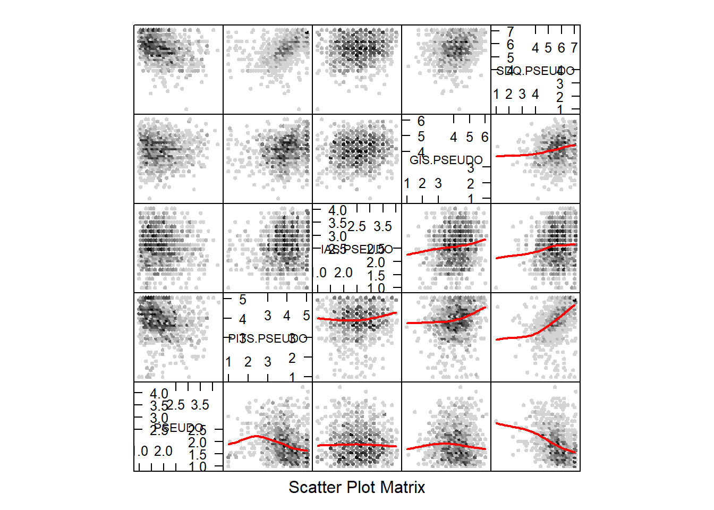

Last updated: 2019-12-01
Checks: 6 1
Knit directory: angelo/
This reproducible R Markdown analysis was created with workflowr (version 1.4.0). The Checks tab describes the reproducibility checks that were applied when the results were created. The Past versions tab lists the development history.
Great! Since the R Markdown file has been committed to the Git repository, you know the exact version of the code that produced these results.
The global environment had objects present when the code in the R Markdown file was run. These objects can affect the analysis in your R Markdown file in unknown ways. For reproduciblity it’s best to always run the code in an empty environment. Use wflow_publish or wflow_build to ensure that the code is always run in an empty environment.
The following objects were defined in the global environment when these results were created:
| Name | Class | Size |
|---|---|---|
| data | environment | 56 bytes |
| env | environment | 56 bytes |
The command set.seed(20190924) was run prior to running the code in the R Markdown file. Setting a seed ensures that any results that rely on randomness, e.g. subsampling or permutations, are reproducible.
Great job! Recording the operating system, R version, and package versions is critical for reproducibility.
Nice! There were no cached chunks for this analysis, so you can be confident that you successfully produced the results during this run.
Great job! Using relative paths to the files within your workflowr project makes it easier to run your code on other machines.
Great! You are using Git for version control. Tracking code development and connecting the code version to the results is critical for reproducibility. The version displayed above was the version of the Git repository at the time these results were generated.
Note that you need to be careful to ensure that all relevant files for the analysis have been committed to Git prior to generating the results (you can use wflow_publish or wflow_git_commit). workflowr only checks the R Markdown file, but you know if there are other scripts or data files that it depends on. Below is the status of the Git repository when the results were generated:
Ignored files:
Ignored: .Rhistory
Ignored: .Rproj.user/
Untracked files:
Untracked: analysis/funcs.R
Untracked: analysis/twolines.R
Untracked: data/Study 1 - Data Matrix (Complete).csv
Untracked: data/Study 1 - Data Matrix (Complete).xls
Untracked: data/Study 1 - Data Matrix.csv
Untracked: data/Study 1 - Data Matrix.xls
Untracked: data/Study 1 - Reversed encoded and Likert scales.doc
Untracked: data/Study 2 - Data Matrix (with control item).xls
Untracked: data/Study 2 - Data Matrix.csv
Untracked: data/Study 2 - Data Matrix.xls
Untracked: data/Study 2 - Reversed encoded and Likert scales.doc
Note that any generated files, e.g. HTML, png, CSS, etc., are not included in this status report because it is ok for generated content to have uncommitted changes.
These are the previous versions of the R Markdown and HTML files. If you’ve configured a remote Git repository (see ?wflow_git_remote), click on the hyperlinks in the table below to view them.
| File | Version | Author | Date | Message |
|---|---|---|---|---|
| Rmd | 8c3b9d4 | StephanLewandowsky | 2019-12-01 | Mediation model for Angelo 2 |
| html | 514dd01 | StephanLewandowsky | 2019-11-20 | Build site. |
| Rmd | ba627c7 | StephanLewandowsky | 2019-11-20 | Exploring nonlinearities in Angelo 2 |
| html | 03f165c | StephanLewandowsky | 2019-11-20 | Build site. |
| Rmd | d68669b | StephanLewandowsky | 2019-11-20 | Exploring nonlinearities in Angelo 2 |
| html | e3fb770 | StephanLewandowsky | 2019-11-18 | Build site. |
| Rmd | 7ad7a94 | StephanLewandowsky | 2019-11-18 | Exploring nonlinearities in Angelo 2 |
| html | c2814c3 | StephanLewandowsky | 2019-11-18 | Build site. |
| Rmd | f87d36e | StephanLewandowsky | 2019-11-18 | Exploring nonlinearities in Angelo 2 |
| html | ae9f567 | StephanLewandowsky | 2019-11-18 | Build site. |
| Rmd | e073a2a | StephanLewandowsky | 2019-11-18 | Exploring nonlinearities in Angelo 2 |
| html | a584281 | StephanLewandowsky | 2019-11-16 | Build site. |
| Rmd | 34f31e3 | StephanLewandowsky | 2019-11-16 | Eliminating bad items Angelo 2 |
| html | c6f70cb | StephanLewandowsky | 2019-11-11 | Build site. |
| Rmd | 39fc381 | StephanLewandowsky | 2019-11-11 | Exploring reliability in Angelo 2 |
| html | 06ce15f | StephanLewandowsky | 2019-11-11 | Build site. |
| Rmd | 3226912 | StephanLewandowsky | 2019-11-11 | Exploring reliability in Angelo 2 |
| html | 980dce8 | StephanLewandowsky | 2019-10-25 | Build site. |
| Rmd | df5e481 | StephanLewandowsky | 2019-10-25 | added second experiment |
| html | 6ccdfa6 | StephanLewandowsky | 2019-10-25 | Build site. |
| Rmd | ed2485f | StephanLewandowsky | 2019-10-25 | added second experiment |
| html | 92447e1 | StephanLewandowsky | 2019-10-25 | Build site. |
| Rmd | f76d9fd | StephanLewandowsky | 2019-10-25 | added second experiment |
rm(list=ls())
library(lattice)
library(hexbin) #helps with large data sets in lattic scatterplot matrix
library(stargazer)
library(tidyverse)
library(lme4)
library(lavaan)
library(semPlot)
library(semTools)
library(RColorBrewer)
library(gridExtra)
library(stringr)
library(Hmisc)
library(reshape2)
library(psych)
library(scales)
library(summarytools) #contains descr()
library(workflowr)
source("analysis/funcs.r")
source("analysis/twolines.r")
revscore <- function (x,cluster) { #this reverse scores a scale for items of reversed polarity
return ((likert[cluster]+1)-x)
}
#define working directories
inputdir <- "data"
## Reading data and variable names
# csv created from "Study 2 - Data Matrix (with control item).xlsx" on 11/11/19.
angelo2raw <- read.csv(paste(inputdir,"Study 2 - Data Matrix.csv",sep="/"),header=TRUE,row.names=NULL) names(angelo2raw)[1] <- "Control"
angelo2 <- angelo2raw %>% filter(Control==1) %>% select(-Control)itemclusters <- c("PSEUDO", "PITS.PSEUDO", "IAS.PSEUDO", "GIS.PSEUDO", "SDQ.PSEUDO")
likert <- c(5,5,4,6,7) #likert scales (for reverse scoring)
names(likert) <- itemclusters
# pre-reverse correlations
sapply(itemclusters,FUN=function(cluster) {
angelo2 %>% select(starts_with(cluster)) %>% cor %>% print
})
# all variables to be reverse-scored contain ".R" in name
angelo2r <- select(angelo2,Age:starts_with("Political")) #grab first bit, then add columns
sapply(itemclusters,FUN=function(cluster) {
angelo2r <<- cbind(angelo2r, angelo2 %>% select(starts_with(cluster)) %>% mutate_at(vars(contains(".R")),revscore,cluster))
})descr(angelo2r)Non-numerical variable(s) ignored: Sex, Education, Nationality, ReligionDescriptive Statistics
angelo2r
N: 1120
Age GIS.PSEUDO.1 GIS.PSEUDO.10..R. GIS.PSEUDO.11..R. GIS.PSEUDO.12
----------------- --------- -------------- ------------------- ------------------- ---------------
Mean 39.56 3.91 4.82 4.83 4.65
Std.Dev 10.02 1.22 1.31 1.36 1.19
Min 15.00 1.00 1.00 1.00 1.00
Q1 33.00 3.00 4.00 4.00 4.00
Median 39.00 4.00 5.00 5.00 5.00
Q3 46.00 5.00 6.00 6.00 5.00
Max 79.00 6.00 6.00 6.00 6.00
MAD 8.90 1.48 1.48 1.48 1.48
IQR 13.00 2.00 2.00 2.00 1.00
CV 0.25 0.31 0.27 0.28 0.26
Skewness 0.43 -0.43 -1.06 -1.16 -1.17
SE.Skewness 0.07 0.07 0.07 0.07 0.07
Kurtosis 0.22 -0.25 0.29 0.50 1.40
N.Valid 1120.00 1120.00 1120.00 1120.00 1120.00
Pct.Valid 100.00 100.00 100.00 100.00 100.00
Table: Table continues below
GIS.PSEUDO.2 GIS.PSEUDO.3..R. GIS.PSEUDO.4..R. GIS.PSEUDO.5
----------------- -------------- ------------------ ------------------ --------------
Mean 3.66 4.54 4.20 3.33
Std.Dev 1.33 1.26 1.39 1.44
Min 1.00 1.00 1.00 1.00
Q1 3.00 4.00 3.00 2.00
Median 4.00 5.00 5.00 3.00
Q3 5.00 5.00 5.00 4.00
Max 6.00 6.00 6.00 6.00
MAD 1.48 1.48 1.48 1.48
IQR 2.00 1.00 2.00 2.00
CV 0.36 0.28 0.33 0.43
Skewness -0.24 -0.77 -0.53 -0.08
SE.Skewness 0.07 0.07 0.07 0.07
Kurtosis -0.66 0.01 -0.62 -1.02
N.Valid 1120.00 1120.00 1120.00 1120.00
Pct.Valid 100.00 100.00 100.00 100.00
Table: Table continues below
GIS.PSEUDO.6..R. GIS.PSEUDO.7 GIS.PSEUDO.8..R. GIS.PSEUDO.9
----------------- ------------------ -------------- ------------------ --------------
Mean 4.11 3.95 3.19 4.30
Std.Dev 1.49 1.48 1.47 1.22
Min 1.00 1.00 1.00 1.00
Q1 3.00 3.00 2.00 4.00
Median 4.00 4.00 3.00 4.00
Q3 5.00 5.00 4.00 5.00
Max 6.00 6.00 6.00 6.00
MAD 1.48 1.48 1.48 1.48
IQR 2.00 2.00 2.00 1.00
CV 0.36 0.37 0.46 0.28
Skewness -0.50 -0.48 0.21 -0.72
SE.Skewness 0.07 0.07 0.07 0.07
Kurtosis -0.80 -0.76 -0.96 0.24
N.Valid 1120.00 1120.00 1120.00 1120.00
Pct.Valid 100.00 100.00 100.00 100.00
Table: Table continues below
IAS.PSEUDO.1..R. IAS.PSEUDO.2 IAS.PSEUDO.3 IAS.PSEUDO.4..R.
----------------- ------------------ -------------- -------------- ------------------
Mean 3.21 2.54 1.99 2.41
Std.Dev 0.91 0.97 0.92 1.05
Min 1.00 1.00 1.00 1.00
Q1 3.00 2.00 1.00 2.00
Median 3.00 3.00 2.00 2.00
Q3 4.00 3.00 3.00 3.00
Max 4.00 4.00 4.00 4.00
MAD 1.48 1.48 1.48 1.48
IQR 1.00 1.00 2.00 1.00
CV 0.28 0.38 0.46 0.44
Skewness -0.76 -0.06 0.47 0.21
SE.Skewness 0.07 0.07 0.07 0.07
Kurtosis -0.61 -0.98 -0.79 -1.15
N.Valid 1120.00 1120.00 1120.00 1120.00
Pct.Valid 100.00 100.00 100.00 100.00
Table: Table continues below
IAS.PSEUDO.5..R. IAS.PSEUDO.6 PITS.PSEUDO.1 PITS.PSEUDO.10 PITS.PSEUDO.2
----------------- ------------------ -------------- --------------- ---------------- ---------------
Mean 2.91 2.38 4.15 3.20 4.37
Std.Dev 0.93 0.91 0.99 1.24 0.96
Min 1.00 1.00 1.00 1.00 1.00
Q1 2.00 2.00 4.00 2.00 4.00
Median 3.00 2.00 4.00 3.00 5.00
Q3 4.00 3.00 5.00 4.00 5.00
Max 4.00 4.00 5.00 5.00 5.00
MAD 1.48 1.48 1.48 1.48 0.00
IQR 2.00 1.00 1.00 2.00 1.00
CV 0.32 0.38 0.24 0.39 0.22
Skewness -0.30 0.03 -1.30 -0.04 -1.89
SE.Skewness 0.07 0.07 0.07 0.07 0.07
Kurtosis -1.00 -0.84 1.46 -1.04 3.50
N.Valid 1120.00 1120.00 1120.00 1120.00 1120.00
Pct.Valid 100.00 100.00 100.00 100.00 100.00
Table: Table continues below
PITS.PSEUDO.3 PITS.PSEUDO.4 PITS.PSEUDO.5 PITS.PSEUDO.6 PITS.PSEUDO.7
----------------- --------------- --------------- --------------- --------------- ---------------
Mean 3.92 4.13 4.22 3.22 4.00
Std.Dev 1.04 1.05 1.01 1.21 1.05
Min 1.00 1.00 1.00 1.00 1.00
Q1 3.00 4.00 4.00 2.00 4.00
Median 4.00 4.00 5.00 3.00 4.00
Q3 5.00 5.00 5.00 4.00 5.00
Max 5.00 5.00 5.00 5.00 5.00
MAD 1.48 1.48 0.00 1.48 1.48
IQR 2.00 1.00 1.00 2.00 1.00
CV 0.27 0.25 0.24 0.38 0.26
Skewness -0.97 -1.32 -1.45 -0.12 -1.05
SE.Skewness 0.07 0.07 0.07 0.07 0.07
Kurtosis 0.45 1.26 1.68 -0.95 0.53
N.Valid 1120.00 1120.00 1120.00 1120.00 1120.00
Pct.Valid 100.00 100.00 100.00 100.00 100.00
Table: Table continues below
PITS.PSEUDO.8 PITS.PSEUDO.9 Political.tendency..1...Left.wing. PSEUDO.1
----------------- --------------- --------------- ------------------------------------ ----------
Mean 3.51 3.88 3.75 1.95
Std.Dev 1.11 1.06 1.94 1.24
Min 1.00 1.00 1.00 1.00
Q1 3.00 3.00 3.00 1.00
Median 4.00 4.00 3.00 1.00
Q3 4.00 5.00 5.00 3.00
Max 5.00 5.00 10.00 5.00
MAD 1.48 1.48 1.48 0.00
IQR 1.00 2.00 2.00 2.00
CV 0.32 0.27 0.52 0.64
Skewness -0.42 -0.89 0.87 1.06
SE.Skewness 0.07 0.07 0.07 0.07
Kurtosis -0.55 0.22 0.50 -0.12
N.Valid 1120.00 1120.00 1120.00 1120.00
Pct.Valid 100.00 100.00 100.00 100.00
Table: Table continues below
PSEUDO.10 PSEUDO.11..R. PSEUDO.12 PSEUDO.13 PSEUDO.14 PSEUDO.15
----------------- ----------- --------------- ----------- ----------- ----------- -----------
Mean 1.58 1.33 1.47 3.62 1.78 1.37
Std.Dev 1.13 0.73 0.92 1.11 1.08 0.84
Min 1.00 1.00 1.00 1.00 1.00 1.00
Q1 1.00 1.00 1.00 3.00 1.00 1.00
Median 1.00 1.00 1.00 4.00 1.00 1.00
Q3 2.00 1.00 2.00 4.00 2.00 1.00
Max 5.00 5.00 5.00 5.00 5.00 5.00
MAD 0.00 0.00 0.00 1.48 0.00 0.00
IQR 1.00 0.00 1.00 1.00 1.00 0.00
CV 0.72 0.55 0.62 0.31 0.61 0.61
Skewness 1.90 2.96 2.10 -0.78 1.32 2.75
SE.Skewness 0.07 0.07 0.07 0.07 0.07 0.07
Kurtosis 2.33 10.17 3.77 0.13 0.84 7.62
N.Valid 1120.00 1120.00 1120.00 1120.00 1120.00 1120.00
Pct.Valid 100.00 100.00 100.00 100.00 100.00 100.00
Table: Table continues below
PSEUDO.16 PSEUDO.17 PSEUDO.18 PSEUDO.19 PSEUDO.2 PSEUDO.20 PSEUDO.21
----------------- ----------- ----------- ----------- ----------- ---------- ----------- -----------
Mean 2.54 1.46 2.23 1.27 2.21 2.12 1.46
Std.Dev 1.06 1.12 1.15 0.82 1.19 1.17 0.79
Min 1.00 1.00 1.00 1.00 1.00 1.00 1.00
Q1 2.00 1.00 1.00 1.00 1.00 1.00 1.00
Median 3.00 1.00 2.00 1.00 2.00 2.00 1.00
Q3 3.00 1.00 3.00 1.00 3.00 3.00 2.00
Max 5.00 5.00 5.00 5.00 5.00 5.00 5.00
MAD 1.48 0.00 1.48 0.00 1.48 1.48 0.00
IQR 1.00 0.00 2.00 0.00 2.00 2.00 1.00
CV 0.42 0.77 0.52 0.64 0.54 0.55 0.54
Skewness -0.07 2.41 0.59 3.64 0.48 0.82 1.80
SE.Skewness 0.07 0.07 0.07 0.07 0.07 0.07 0.07
Kurtosis -0.68 4.35 -0.57 12.94 -0.89 -0.30 2.94
N.Valid 1120.00 1120.00 1120.00 1120.00 1120.00 1120.00 1120.00
Pct.Valid 100.00 100.00 100.00 100.00 100.00 100.00 100.00
Table: Table continues below
PSEUDO.22 PSEUDO.23 PSEUDO.24..R. PSEUDO.25..R. PSEUDO.26
----------------- ----------- ----------- --------------- --------------- -----------
Mean 1.94 1.51 2.29 1.46 1.41
Std.Dev 1.01 0.94 1.18 0.88 0.87
Min 1.00 1.00 1.00 1.00 1.00
Q1 1.00 1.00 1.00 1.00 1.00
Median 2.00 1.00 2.00 1.00 1.00
Q3 3.00 2.00 3.00 2.00 1.00
Max 5.00 5.00 5.00 5.00 5.00
MAD 1.48 0.00 1.48 0.00 0.00
IQR 2.00 1.00 2.00 1.00 0.00
CV 0.52 0.62 0.51 0.60 0.61
Skewness 0.64 1.98 0.72 2.29 2.34
SE.Skewness 0.07 0.07 0.07 0.07 0.07
Kurtosis -0.55 3.27 -0.33 5.34 5.17
N.Valid 1120.00 1120.00 1120.00 1120.00 1120.00
Pct.Valid 100.00 100.00 100.00 100.00 100.00
Table: Table continues below
PSEUDO.27..R. PSEUDO.28 PSEUDO.29 PSEUDO.3 PSEUDO.30 PSEUDO.4..R.
----------------- --------------- ----------- ----------- ---------- ----------- --------------
Mean 1.65 1.95 2.81 2.02 1.14 1.75
Std.Dev 1.32 1.06 1.33 1.12 0.56 1.41
Min 1.00 1.00 1.00 1.00 1.00 1.00
Q1 1.00 1.00 2.00 1.00 1.00 1.00
Median 1.00 2.00 3.00 2.00 1.00 1.00
Q3 1.00 3.00 4.00 3.00 1.00 2.00
Max 5.00 5.00 5.00 5.00 5.00 5.00
MAD 0.00 1.48 1.48 1.48 0.00 0.00
IQR 0.00 2.00 2.00 2.00 0.00 1.00
CV 0.80 0.54 0.47 0.55 0.49 0.81
Skewness 1.85 0.85 0.20 0.74 5.04 1.63
SE.Skewness 0.07 0.07 0.07 0.07 0.07 0.07
Kurtosis 1.79 -0.11 -1.18 -0.43 27.78 0.97
N.Valid 1120.00 1120.00 1120.00 1120.00 1120.00 1120.00
Pct.Valid 100.00 100.00 100.00 100.00 100.00 100.00
Table: Table continues below
PSEUDO.5 PSEUDO.6 PSEUDO.7..R. PSEUDO.8 PSEUDO.9 SDQ.PSEUDO.1..R.
----------------- ---------- ---------- -------------- ---------- ---------- ------------------
Mean 1.97 1.61 2.07 1.24 2.04 6.05
Std.Dev 1.09 0.99 1.22 0.72 1.02 1.07
Min 1.00 1.00 1.00 1.00 1.00 1.00
Q1 1.00 1.00 1.00 1.00 1.00 6.00
Median 2.00 1.00 2.00 1.00 2.00 6.00
Q3 3.00 2.00 3.00 1.00 3.00 7.00
Max 5.00 5.00 5.00 5.00 5.00 7.00
MAD 1.48 0.00 1.48 0.00 1.48 1.48
IQR 2.00 1.00 2.00 0.00 2.00 1.00
CV 0.55 0.62 0.59 0.58 0.50 0.18
Skewness 0.83 1.64 0.84 3.56 0.78 -1.37
SE.Skewness 0.07 0.07 0.07 0.07 0.07 0.07
Kurtosis -0.29 1.93 -0.40 13.22 -0.17 2.39
N.Valid 1120.00 1120.00 1120.00 1120.00 1120.00 1120.00
Pct.Valid 100.00 100.00 100.00 100.00 100.00 100.00
Table: Table continues below
SDQ.PSEUDO.2 SDQ.PSEUDO.3 SDQ.PSEUDO.4..R. SDQ.PSEUDO.5 SDQ.PSEUDO.6..R.
----------------- -------------- -------------- ------------------ -------------- ------------------
Mean 5.53 5.52 4.95 6.11 5.00
Std.Dev 1.18 1.35 1.64 1.24 1.19
Min 1.00 1.00 1.00 1.00 1.00
Q1 5.00 5.00 4.00 6.00 4.00
Median 6.00 6.00 5.00 7.00 5.00
Q3 6.00 7.00 6.00 7.00 6.00
Max 7.00 7.00 7.00 7.00 7.00
MAD 1.48 1.48 1.48 0.00 1.48
IQR 1.00 2.00 2.00 1.00 2.00
CV 0.21 0.25 0.33 0.20 0.24
Skewness -0.59 -1.01 -0.45 -1.81 -0.01
SE.Skewness 0.07 0.07 0.07 0.07 0.07
Kurtosis 0.09 0.90 -0.54 3.37 -0.31
N.Valid 1120.00 1120.00 1120.00 1120.00 1120.00
Pct.Valid 100.00 100.00 100.00 100.00 100.00
Table: Table continues below
SDQ.PSEUDO.7 SDQ.PSEUDO.8 SDQ.PSEUDO.9
----------------- -------------- -------------- --------------
Mean 5.48 5.50 5.73
Std.Dev 1.16 1.69 1.28
Min 1.00 1.00 1.00
Q1 5.00 5.00 5.00
Median 6.00 6.00 6.00
Q3 6.00 7.00 7.00
Max 7.00 7.00 7.00
MAD 1.48 1.48 1.48
IQR 1.00 2.00 2.00
CV 0.21 0.31 0.22
Skewness -0.78 -1.10 -0.86
SE.Skewness 0.07 0.07 0.07
Kurtosis 0.93 0.28 0.23
N.Valid 1120.00 1120.00 1120.00
Pct.Valid 100.00 100.00 100.00sapply(itemclusters,FUN=function(cluster) {
angelo2r %>% select(starts_with(cluster)) %>% cor
})$PSEUDO
PSEUDO.1 PSEUDO.2 PSEUDO.3 PSEUDO.4..R.
PSEUDO.1 1.000000000 0.51198646 0.40079174 0.15974072
PSEUDO.2 0.511986456 1.00000000 0.37161046 0.11727455
PSEUDO.3 0.400791738 0.37161046 1.00000000 0.06869871
PSEUDO.4..R. 0.159740725 0.11727455 0.06869871 1.00000000
PSEUDO.5 0.311029970 0.28991118 0.28742277 0.07451794
PSEUDO.6 0.504473443 0.41461342 0.38859251 0.19472394
PSEUDO.7..R. 0.314255788 0.27928464 0.25867634 0.15406087
PSEUDO.8 0.360762750 0.29974275 0.32048816 0.18079099
PSEUDO.9 0.202541021 0.19925110 0.19589220 0.02451306
PSEUDO.10 0.416302735 0.33340142 0.29902319 0.10345522
PSEUDO.11..R. 0.131398015 0.13103301 0.07743483 0.12602358
PSEUDO.12 0.441624666 0.39083216 0.33283793 0.19635546
PSEUDO.13 0.171708190 0.18854163 0.16866281 0.05399078
PSEUDO.14 0.420842548 0.33884525 0.34895544 0.16064500
PSEUDO.15 0.116867369 0.07584676 0.06802184 0.03341069
PSEUDO.16 0.280978055 0.28238171 0.30403833 0.08242330
PSEUDO.17 0.104055668 0.04247546 0.06753579 0.05832504
PSEUDO.18 0.299911534 0.33133619 0.27618571 0.08583346
PSEUDO.19 -0.007626306 -0.03751479 0.01756681 0.02519654
PSEUDO.20 0.091623636 0.06777581 0.06679054 0.05553408
PSEUDO.21 0.331571670 0.27203333 0.30154103 0.12392074
PSEUDO.22 0.352401235 0.27416858 0.33672217 0.07460444
PSEUDO.23 0.240366792 0.16586548 0.15647330 0.10716742
PSEUDO.24..R. 0.354838380 0.28444566 0.26990907 0.14721332
PSEUDO.25..R. 0.194432665 0.12669533 0.11728693 0.07077699
PSEUDO.26 0.431674988 0.34854460 0.35845740 0.16874022
PSEUDO.27..R. 0.169319982 0.13406812 0.11264070 0.16178162
PSEUDO.28 0.340259009 0.28099471 0.30661835 0.08348659
PSEUDO.29 0.315932370 0.27284606 0.26602009 0.08763597
PSEUDO.30 0.234466020 0.19461135 0.21403426 0.13780856
PSEUDO.5 PSEUDO.6 PSEUDO.7..R. PSEUDO.8 PSEUDO.9
PSEUDO.1 0.311029970 0.50447344 0.31425579 0.36076275 0.20254102
PSEUDO.2 0.289911177 0.41461342 0.27928464 0.29974275 0.19925110
PSEUDO.3 0.287422770 0.38859251 0.25867634 0.32048816 0.19589220
PSEUDO.4..R. 0.074517937 0.19472394 0.15406087 0.18079099 0.02451306
PSEUDO.5 1.000000000 0.42231572 0.38148130 0.22646737 0.25229061
PSEUDO.6 0.422315722 1.00000000 0.43358215 0.48051303 0.24241669
PSEUDO.7..R. 0.381481295 0.43358215 1.00000000 0.22732035 0.20234969
PSEUDO.8 0.226467370 0.48051303 0.22732035 1.00000000 0.13006921
PSEUDO.9 0.252290609 0.24241669 0.20234969 0.13006921 1.00000000
PSEUDO.10 0.221700795 0.38179083 0.23504471 0.42115757 0.17190074
PSEUDO.11..R. 0.090182865 0.16933033 0.16485769 0.14395263 0.08943639
PSEUDO.12 0.354332742 0.54500263 0.40583838 0.44290746 0.23006110
PSEUDO.13 0.199533943 0.15681419 0.12847663 0.07573444 0.16454300
PSEUDO.14 0.359931393 0.49338343 0.31745210 0.39556365 0.23856708
PSEUDO.15 0.049437612 0.08915701 0.06817997 0.16443820 0.08722015
PSEUDO.16 0.389990349 0.31151049 0.23741261 0.19513609 0.21550287
PSEUDO.17 0.057821240 0.10470524 0.02735321 0.08036061 0.01056011
PSEUDO.18 0.375054728 0.31937106 0.26751993 0.17916844 0.30013982
PSEUDO.19 0.004493142 0.01258941 0.01628718 0.06720238 0.01359718
PSEUDO.20 -0.002968973 0.09431519 -0.01010557 0.14364593 -0.08022863
PSEUDO.21 0.254840770 0.40277508 0.24179133 0.40088174 0.18549699
PSEUDO.22 0.277852807 0.34634193 0.25645717 0.27734053 0.18532888
PSEUDO.23 0.182758588 0.27400186 0.14468699 0.24027279 0.11387112
PSEUDO.24..R. 0.322662190 0.38496482 0.39068989 0.26669306 0.21010453
PSEUDO.25..R. 0.119705283 0.20630097 0.20607733 0.13571768 0.05243513
PSEUDO.26 0.319069273 0.50984929 0.33156624 0.46320597 0.20066855
PSEUDO.27..R. 0.080123811 0.23083925 0.21918941 0.19763127 0.05258693
PSEUDO.28 0.262489556 0.34154440 0.27101039 0.22533684 0.16385045
PSEUDO.29 0.330024652 0.36482057 0.31105875 0.23378480 0.21157672
PSEUDO.30 0.137411850 0.30416062 0.18851714 0.30398787 0.07767335
PSEUDO.10 PSEUDO.11..R. PSEUDO.12 PSEUDO.13
PSEUDO.1 0.41630274 0.13139802 0.44162467 0.17170819
PSEUDO.2 0.33340142 0.13103301 0.39083216 0.18854163
PSEUDO.3 0.29902319 0.07743483 0.33283793 0.16866281
PSEUDO.4..R. 0.10345522 0.12602358 0.19635546 0.05399078
PSEUDO.5 0.22170080 0.09018287 0.35433274 0.19953394
PSEUDO.6 0.38179083 0.16933033 0.54500263 0.15681419
PSEUDO.7..R. 0.23504471 0.16485769 0.40583838 0.12847663
PSEUDO.8 0.42115757 0.14395263 0.44290746 0.07573444
PSEUDO.9 0.17190074 0.08943639 0.23006110 0.16454300
PSEUDO.10 1.00000000 0.16925075 0.40586700 0.08419394
PSEUDO.11..R. 0.16925075 1.00000000 0.15961828 -0.05733538
PSEUDO.12 0.40586700 0.15961828 1.00000000 0.14087521
PSEUDO.13 0.08419394 -0.05733538 0.14087521 1.00000000
PSEUDO.14 0.33182302 0.08966192 0.44479687 0.19457934
PSEUDO.15 0.18626412 0.09663940 0.12082295 0.03954710
PSEUDO.16 0.20431244 0.01730979 0.24214148 0.30693479
PSEUDO.17 0.12001727 0.06203972 0.06066448 0.05634077
PSEUDO.18 0.19447504 0.04773021 0.32173384 0.27040207
PSEUDO.19 0.01194576 -0.01340661 0.04334565 -0.01481482
PSEUDO.20 0.10328463 0.02635062 0.11392951 0.01644668
PSEUDO.21 0.24833813 0.15952723 0.29276245 0.07347912
PSEUDO.22 0.24783471 0.07047566 0.27407470 0.11809033
PSEUDO.23 0.24928333 0.16926412 0.24564531 0.10187212
PSEUDO.24..R. 0.24216473 0.19587859 0.38831051 0.11557319
PSEUDO.25..R. 0.15936032 0.20198221 0.20366476 -0.02560879
PSEUDO.26 0.41071524 0.15861763 0.60660924 0.10829334
PSEUDO.27..R. 0.15001984 0.08942450 0.21158209 0.03425462
PSEUDO.28 0.18840983 0.14779441 0.30166007 0.14681886
PSEUDO.29 0.25937045 0.06324753 0.32171676 0.17851413
PSEUDO.30 0.26413217 0.22519605 0.32953333 0.05255443
PSEUDO.14 PSEUDO.15 PSEUDO.16 PSEUDO.17 PSEUDO.18
PSEUDO.1 0.4208425483 0.11686737 0.280978055 0.10405567 0.29991153
PSEUDO.2 0.3388452490 0.07584676 0.282381715 0.04247546 0.33133619
PSEUDO.3 0.3489554429 0.06802184 0.304038332 0.06753579 0.27618571
PSEUDO.4..R. 0.1606450039 0.03341069 0.082423295 0.05832504 0.08583346
PSEUDO.5 0.3599313934 0.04943761 0.389990349 0.05782124 0.37505473
PSEUDO.6 0.4933834350 0.08915701 0.311510486 0.10470524 0.31937106
PSEUDO.7..R. 0.3174520978 0.06817997 0.237412605 0.02735321 0.26751993
PSEUDO.8 0.3955636469 0.16443820 0.195136092 0.08036061 0.17916844
PSEUDO.9 0.2385670842 0.08722015 0.215502869 0.01056011 0.30013982
PSEUDO.10 0.3318230166 0.18626412 0.204312435 0.12001727 0.19447504
PSEUDO.11..R. 0.0896619226 0.09663940 0.017309790 0.06203972 0.04773021
PSEUDO.12 0.4447968674 0.12082295 0.242141482 0.06066448 0.32173384
PSEUDO.13 0.1945793426 0.03954710 0.306934788 0.05634077 0.27040207
PSEUDO.14 1.0000000000 0.13937278 0.274366464 0.10409393 0.25096107
PSEUDO.15 0.1393727817 1.00000000 0.040092004 0.09498312 0.01383178
PSEUDO.16 0.2743664643 0.04009200 1.000000000 0.08819202 0.39929419
PSEUDO.17 0.1040939301 0.09498312 0.088192020 1.00000000 0.01615688
PSEUDO.18 0.2509610671 0.01383178 0.399294192 0.01615688 1.00000000
PSEUDO.19 -0.0000820227 0.04894897 -0.015766451 0.05022431 -0.02021796
PSEUDO.20 0.0660537232 0.14838607 0.002610943 0.05427110 -0.12986214
PSEUDO.21 0.3966217256 0.11873049 0.231047240 0.09602227 0.19626175
PSEUDO.22 0.3256654982 0.07160743 0.250745270 0.07827436 0.18100455
PSEUDO.23 0.2384196776 0.26369687 0.164406449 0.06637874 0.15071205
PSEUDO.24..R. 0.3241236303 0.03954026 0.226841644 0.04428202 0.25248756
PSEUDO.25..R. 0.1074630862 0.06220160 0.080496262 0.07177854 0.08558307
PSEUDO.26 0.4150737509 0.16303703 0.221612618 0.10067148 0.23382258
PSEUDO.27..R. 0.1965340030 0.05768263 0.044002139 0.04738729 0.04664528
PSEUDO.28 0.2872866570 0.10505946 0.201917848 0.07291732 0.15865720
PSEUDO.29 0.3133226063 0.04590433 0.229999887 0.06216661 0.25817347
PSEUDO.30 0.2871314645 0.18842377 0.090495284 0.08169376 0.08296991
PSEUDO.19 PSEUDO.20 PSEUDO.21 PSEUDO.22 PSEUDO.23
PSEUDO.1 -0.0076263064 0.091623636 0.33157167 0.35240124 0.24036679
PSEUDO.2 -0.0375147918 0.067775807 0.27203333 0.27416858 0.16586548
PSEUDO.3 0.0175668110 0.066790540 0.30154103 0.33672217 0.15647330
PSEUDO.4..R. 0.0251965418 0.055534082 0.12392074 0.07460444 0.10716742
PSEUDO.5 0.0044931423 -0.002968973 0.25484077 0.27785281 0.18275859
PSEUDO.6 0.0125894118 0.094315191 0.40277508 0.34634193 0.27400186
PSEUDO.7..R. 0.0162871759 -0.010105567 0.24179133 0.25645717 0.14468699
PSEUDO.8 0.0672023822 0.143645932 0.40088174 0.27734053 0.24027279
PSEUDO.9 0.0135971818 -0.080228633 0.18549699 0.18532888 0.11387112
PSEUDO.10 0.0119457589 0.103284629 0.24833813 0.24783471 0.24928333
PSEUDO.11..R. -0.0134066144 0.026350619 0.15952723 0.07047566 0.16926412
PSEUDO.12 0.0433456514 0.113929506 0.29276245 0.27407470 0.24564531
PSEUDO.13 -0.0148148158 0.016446676 0.07347912 0.11809033 0.10187212
PSEUDO.14 -0.0000820227 0.066053723 0.39662173 0.32566550 0.23841968
PSEUDO.15 0.0489489691 0.148386075 0.11873049 0.07160743 0.26369687
PSEUDO.16 -0.0157664512 0.002610943 0.23104724 0.25074527 0.16440645
PSEUDO.17 0.0502243061 0.054271099 0.09602227 0.07827436 0.06637874
PSEUDO.18 -0.0202179553 -0.129862136 0.19626175 0.18100455 0.15071205
PSEUDO.19 1.0000000000 -0.004509632 0.04716425 0.01034916 0.02733140
PSEUDO.20 -0.0045096315 1.000000000 0.10472612 0.08308694 0.13097803
PSEUDO.21 0.0471642515 0.104726122 1.00000000 0.29886668 0.24177005
PSEUDO.22 0.0103491600 0.083086944 0.29886668 1.00000000 0.22524551
PSEUDO.23 0.0273313957 0.130978032 0.24177005 0.22524551 1.00000000
PSEUDO.24..R. -0.0393137894 0.043710824 0.24680079 0.23124634 0.08168625
PSEUDO.25..R. -0.0015112753 0.035461637 0.16587883 0.12225943 0.14820212
PSEUDO.26 0.0657601406 0.119821294 0.37423555 0.27376952 0.28274536
PSEUDO.27..R. 0.0435896964 0.113666700 0.12938012 0.06559999 0.03715188
PSEUDO.28 0.0183197598 0.079853876 0.27419983 0.24581006 0.15275444
PSEUDO.29 -0.0273471159 0.080975141 0.21792475 0.24721402 0.10098959
PSEUDO.30 0.0611360181 0.123060547 0.26979688 0.15684192 0.14553765
PSEUDO.24..R. PSEUDO.25..R. PSEUDO.26 PSEUDO.27..R.
PSEUDO.1 0.35483838 0.194432665 0.43167499 0.16931998
PSEUDO.2 0.28444566 0.126695331 0.34854460 0.13406812
PSEUDO.3 0.26990907 0.117286926 0.35845740 0.11264070
PSEUDO.4..R. 0.14721332 0.070776990 0.16874022 0.16178162
PSEUDO.5 0.32266219 0.119705283 0.31906927 0.08012381
PSEUDO.6 0.38496482 0.206300972 0.50984929 0.23083925
PSEUDO.7..R. 0.39068989 0.206077333 0.33156624 0.21918941
PSEUDO.8 0.26669306 0.135717677 0.46320597 0.19763127
PSEUDO.9 0.21010453 0.052435130 0.20066855 0.05258693
PSEUDO.10 0.24216473 0.159360320 0.41071524 0.15001984
PSEUDO.11..R. 0.19587859 0.201982215 0.15861763 0.08942450
PSEUDO.12 0.38831051 0.203664764 0.60660924 0.21158209
PSEUDO.13 0.11557319 -0.025608792 0.10829334 0.03425462
PSEUDO.14 0.32412363 0.107463086 0.41507375 0.19653400
PSEUDO.15 0.03954026 0.062201599 0.16303703 0.05768263
PSEUDO.16 0.22684164 0.080496262 0.22161262 0.04400214
PSEUDO.17 0.04428202 0.071778545 0.10067148 0.04738729
PSEUDO.18 0.25248756 0.085583067 0.23382258 0.04664528
PSEUDO.19 -0.03931379 -0.001511275 0.06576014 0.04358970
PSEUDO.20 0.04371082 0.035461637 0.11982129 0.11366670
PSEUDO.21 0.24680079 0.165878827 0.37423555 0.12938012
PSEUDO.22 0.23124634 0.122259434 0.27376952 0.06559999
PSEUDO.23 0.08168625 0.148202116 0.28274536 0.03715188
PSEUDO.24..R. 1.00000000 0.194517927 0.32278119 0.18469307
PSEUDO.25..R. 0.19451793 1.000000000 0.18685914 0.14189735
PSEUDO.26 0.32278119 0.186859145 1.00000000 0.20068075
PSEUDO.27..R. 0.18469307 0.141897349 0.20068075 1.00000000
PSEUDO.28 0.23413263 0.144315713 0.27058054 0.15922938
PSEUDO.29 0.53128012 0.116867272 0.31784033 0.13872639
PSEUDO.30 0.24795033 0.178813818 0.29277498 0.18315653
PSEUDO.28 PSEUDO.29 PSEUDO.30
PSEUDO.1 0.34025901 0.31593237 0.23446602
PSEUDO.2 0.28099471 0.27284606 0.19461135
PSEUDO.3 0.30661835 0.26602009 0.21403426
PSEUDO.4..R. 0.08348659 0.08763597 0.13780856
PSEUDO.5 0.26248956 0.33002465 0.13741185
PSEUDO.6 0.34154440 0.36482057 0.30416062
PSEUDO.7..R. 0.27101039 0.31105875 0.18851714
PSEUDO.8 0.22533684 0.23378480 0.30398787
PSEUDO.9 0.16385045 0.21157672 0.07767335
PSEUDO.10 0.18840983 0.25937045 0.26413217
PSEUDO.11..R. 0.14779441 0.06324753 0.22519605
PSEUDO.12 0.30166007 0.32171676 0.32953333
PSEUDO.13 0.14681886 0.17851413 0.05255443
PSEUDO.14 0.28728666 0.31332261 0.28713146
PSEUDO.15 0.10505946 0.04590433 0.18842377
PSEUDO.16 0.20191785 0.22999989 0.09049528
PSEUDO.17 0.07291732 0.06216661 0.08169376
PSEUDO.18 0.15865720 0.25817347 0.08296991
PSEUDO.19 0.01831976 -0.02734712 0.06113602
PSEUDO.20 0.07985388 0.08097514 0.12306055
PSEUDO.21 0.27419983 0.21792475 0.26979688
PSEUDO.22 0.24581006 0.24721402 0.15684192
PSEUDO.23 0.15275444 0.10098959 0.14553765
PSEUDO.24..R. 0.23413263 0.53128012 0.24795033
PSEUDO.25..R. 0.14431571 0.11686727 0.17881382
PSEUDO.26 0.27058054 0.31784033 0.29277498
PSEUDO.27..R. 0.15922938 0.13872639 0.18315653
PSEUDO.28 1.00000000 0.22849339 0.18334899
PSEUDO.29 0.22849339 1.00000000 0.21413601
PSEUDO.30 0.18334899 0.21413601 1.00000000
$PITS.PSEUDO
PITS.PSEUDO.1 PITS.PSEUDO.2 PITS.PSEUDO.3 PITS.PSEUDO.4
PITS.PSEUDO.1 1.0000000 0.6106472 0.5545712 0.5839400
PITS.PSEUDO.2 0.6106472 1.0000000 0.4709487 0.5671582
PITS.PSEUDO.3 0.5545712 0.4709487 1.0000000 0.4979628
PITS.PSEUDO.4 0.5839400 0.5671582 0.4979628 1.0000000
PITS.PSEUDO.5 0.5793820 0.5830891 0.4730381 0.5466532
PITS.PSEUDO.6 0.3570081 0.3353941 0.4517491 0.3674545
PITS.PSEUDO.7 0.4950781 0.4643512 0.5167577 0.4714351
PITS.PSEUDO.8 0.4504398 0.4058354 0.5198192 0.4660790
PITS.PSEUDO.9 0.4518911 0.4439825 0.4445551 0.4045448
PITS.PSEUDO.10 0.3627820 0.3273667 0.4470140 0.4119497
PITS.PSEUDO.5 PITS.PSEUDO.6 PITS.PSEUDO.7 PITS.PSEUDO.8
PITS.PSEUDO.1 0.5793820 0.3570081 0.4950781 0.4504398
PITS.PSEUDO.2 0.5830891 0.3353941 0.4643512 0.4058354
PITS.PSEUDO.3 0.4730381 0.4517491 0.5167577 0.5198192
PITS.PSEUDO.4 0.5466532 0.3674545 0.4714351 0.4660790
PITS.PSEUDO.5 1.0000000 0.3391865 0.4099160 0.4158916
PITS.PSEUDO.6 0.3391865 1.0000000 0.4793939 0.5420421
PITS.PSEUDO.7 0.4099160 0.4793939 1.0000000 0.5342267
PITS.PSEUDO.8 0.4158916 0.5420421 0.5342267 1.0000000
PITS.PSEUDO.9 0.4045414 0.4677803 0.4763242 0.5746451
PITS.PSEUDO.10 0.3292807 0.5738314 0.4527050 0.5940360
PITS.PSEUDO.9 PITS.PSEUDO.10
PITS.PSEUDO.1 0.4518911 0.3627820
PITS.PSEUDO.2 0.4439825 0.3273667
PITS.PSEUDO.3 0.4445551 0.4470140
PITS.PSEUDO.4 0.4045448 0.4119497
PITS.PSEUDO.5 0.4045414 0.3292807
PITS.PSEUDO.6 0.4677803 0.5738314
PITS.PSEUDO.7 0.4763242 0.4527050
PITS.PSEUDO.8 0.5746451 0.5940360
PITS.PSEUDO.9 1.0000000 0.4674083
PITS.PSEUDO.10 0.4674083 1.0000000
$IAS.PSEUDO
IAS.PSEUDO.1..R. IAS.PSEUDO.2 IAS.PSEUDO.3
IAS.PSEUDO.1..R. 1.0000000 0.3556153 0.1704356
IAS.PSEUDO.2 0.3556153 1.0000000 0.4321569
IAS.PSEUDO.3 0.1704356 0.4321569 1.0000000
IAS.PSEUDO.4..R. 0.3235350 0.2743349 0.2896305
IAS.PSEUDO.5..R. 0.4492261 0.4672530 0.3209841
IAS.PSEUDO.6 0.2205235 0.3849756 0.3511805
IAS.PSEUDO.4..R. IAS.PSEUDO.5..R. IAS.PSEUDO.6
IAS.PSEUDO.1..R. 0.3235350 0.4492261 0.2205235
IAS.PSEUDO.2 0.2743349 0.4672530 0.3849756
IAS.PSEUDO.3 0.2896305 0.3209841 0.3511805
IAS.PSEUDO.4..R. 1.0000000 0.3975291 0.2016126
IAS.PSEUDO.5..R. 0.3975291 1.0000000 0.3915477
IAS.PSEUDO.6 0.2016126 0.3915477 1.0000000
$GIS.PSEUDO
GIS.PSEUDO.1 GIS.PSEUDO.2 GIS.PSEUDO.3..R.
GIS.PSEUDO.1 1.00000000 0.501974412 0.06419095
GIS.PSEUDO.2 0.50197441 1.000000000 0.01990466
GIS.PSEUDO.3..R. 0.06419095 0.019904660 1.00000000
GIS.PSEUDO.4..R. 0.22768427 0.292737262 0.20470523
GIS.PSEUDO.5 0.37743662 0.416058345 0.07036006
GIS.PSEUDO.6..R. 0.15624035 0.185939859 0.05720359
GIS.PSEUDO.7 0.36780476 0.380010879 0.01548812
GIS.PSEUDO.8..R. 0.11762247 0.250966217 0.13388694
GIS.PSEUDO.9 0.44966807 0.485164055 0.09057378
GIS.PSEUDO.10..R. 0.01770895 0.008560719 0.16140117
GIS.PSEUDO.11..R. 0.07170260 0.113520605 0.25031353
GIS.PSEUDO.12 0.38117801 0.362362554 0.08181136
GIS.PSEUDO.4..R. GIS.PSEUDO.5 GIS.PSEUDO.6..R.
GIS.PSEUDO.1 0.22768427 0.37743662 0.15624035
GIS.PSEUDO.2 0.29273726 0.41605835 0.18593986
GIS.PSEUDO.3..R. 0.20470523 0.07036006 0.05720359
GIS.PSEUDO.4..R. 1.00000000 0.17067488 0.17981266
GIS.PSEUDO.5 0.17067488 1.00000000 0.16618229
GIS.PSEUDO.6..R. 0.17981266 0.16618229 1.00000000
GIS.PSEUDO.7 0.12721476 0.32056900 0.24552344
GIS.PSEUDO.8..R. 0.19228709 0.31996982 0.18651410
GIS.PSEUDO.9 0.26477264 0.41347988 0.19108457
GIS.PSEUDO.10..R. 0.08642856 -0.02375864 0.09561681
GIS.PSEUDO.11..R. 0.26838457 0.08822344 0.20227586
GIS.PSEUDO.12 0.17541131 0.37057644 0.16779505
GIS.PSEUDO.7 GIS.PSEUDO.8..R. GIS.PSEUDO.9
GIS.PSEUDO.1 0.3678047553 0.11762247 0.44966807
GIS.PSEUDO.2 0.3800108789 0.25096622 0.48516405
GIS.PSEUDO.3..R. 0.0154881192 0.13388694 0.09057378
GIS.PSEUDO.4..R. 0.1272147623 0.19228709 0.26477264
GIS.PSEUDO.5 0.3205690044 0.31996982 0.41347988
GIS.PSEUDO.6..R. 0.2455234421 0.18651410 0.19108457
GIS.PSEUDO.7 1.0000000000 0.09214599 0.41795792
GIS.PSEUDO.8..R. 0.0921459870 1.00000000 0.14934084
GIS.PSEUDO.9 0.4179579155 0.14934084 1.00000000
GIS.PSEUDO.10..R. 0.0009949863 0.03964758 0.01727021
GIS.PSEUDO.11..R. 0.1242705005 0.13124001 0.21059137
GIS.PSEUDO.12 0.4053617239 0.05816998 0.54278874
GIS.PSEUDO.10..R. GIS.PSEUDO.11..R. GIS.PSEUDO.12
GIS.PSEUDO.1 0.0177089451 0.07170260 0.38117801
GIS.PSEUDO.2 0.0085607189 0.11352060 0.36236255
GIS.PSEUDO.3..R. 0.1614011663 0.25031353 0.08181136
GIS.PSEUDO.4..R. 0.0864285578 0.26838457 0.17541131
GIS.PSEUDO.5 -0.0237586445 0.08822344 0.37057644
GIS.PSEUDO.6..R. 0.0956168122 0.20227586 0.16779505
GIS.PSEUDO.7 0.0009949863 0.12427050 0.40536172
GIS.PSEUDO.8..R. 0.0396475763 0.13124001 0.05816998
GIS.PSEUDO.9 0.0172702091 0.21059137 0.54278874
GIS.PSEUDO.10..R. 1.0000000000 0.21453288 -0.04561574
GIS.PSEUDO.11..R. 0.2145328798 1.00000000 0.17342313
GIS.PSEUDO.12 -0.0456157413 0.17342313 1.00000000
$SDQ.PSEUDO
SDQ.PSEUDO.1..R. SDQ.PSEUDO.2 SDQ.PSEUDO.3
SDQ.PSEUDO.1..R. 1.0000000 0.4769621 0.4130142
SDQ.PSEUDO.2 0.4769621 1.0000000 0.5537807
SDQ.PSEUDO.3 0.4130142 0.5537807 1.0000000
SDQ.PSEUDO.4..R. 0.2245059 0.1447048 0.2152976
SDQ.PSEUDO.5 0.4338134 0.3769268 0.3824236
SDQ.PSEUDO.6..R. 0.3648373 0.4920615 0.4362944
SDQ.PSEUDO.7 0.4560562 0.5383745 0.5053390
SDQ.PSEUDO.8 0.3162280 0.2419474 0.2683539
SDQ.PSEUDO.9 0.4620096 0.4358155 0.3669535
SDQ.PSEUDO.4..R. SDQ.PSEUDO.5 SDQ.PSEUDO.6..R.
SDQ.PSEUDO.1..R. 0.2245059 0.4338134 0.3648373
SDQ.PSEUDO.2 0.1447048 0.3769268 0.4920615
SDQ.PSEUDO.3 0.2152976 0.3824236 0.4362944
SDQ.PSEUDO.4..R. 1.0000000 0.1483115 0.1708793
SDQ.PSEUDO.5 0.1483115 1.0000000 0.2972012
SDQ.PSEUDO.6..R. 0.1708793 0.2972012 1.0000000
SDQ.PSEUDO.7 0.2534184 0.3916677 0.5676131
SDQ.PSEUDO.8 0.1055245 0.4060336 0.1687528
SDQ.PSEUDO.9 0.1732847 0.5671863 0.3997715
SDQ.PSEUDO.7 SDQ.PSEUDO.8 SDQ.PSEUDO.9
SDQ.PSEUDO.1..R. 0.4560562 0.3162280 0.4620096
SDQ.PSEUDO.2 0.5383745 0.2419474 0.4358155
SDQ.PSEUDO.3 0.5053390 0.2683539 0.3669535
SDQ.PSEUDO.4..R. 0.2534184 0.1055245 0.1732847
SDQ.PSEUDO.5 0.3916677 0.4060336 0.5671863
SDQ.PSEUDO.6..R. 0.5676131 0.1687528 0.3997715
SDQ.PSEUDO.7 1.0000000 0.2869714 0.4556818
SDQ.PSEUDO.8 0.2869714 1.0000000 0.3812077
SDQ.PSEUDO.9 0.4556818 0.3812077 1.0000000angelocomps <- NULL
for (cluster in itemclusters) {
angelocomps <- cbind(angelocomps, angelo2r %>% select(starts_with(cluster)) %>% apply(.,1,mean,na.rm=TRUE))
}
angelocomps <- as.data.frame(angelocomps)
names(angelocomps) <- itemclusters
angelocomps <- cbind(select(angelo2r,Age:starts_with("Political")), angelocomps)
cor(angelocomps %>% select(-c(Age:starts_with("Political")))) PSEUDO PITS.PSEUDO IAS.PSEUDO GIS.PSEUDO SDQ.PSEUDO
PSEUDO 1.00000000 -0.1917903 -0.04603623 -0.04142810 -0.2885868
PITS.PSEUDO -0.19179033 1.0000000 0.11218247 0.14033260 0.4483996
IAS.PSEUDO -0.04603623 0.1121825 1.00000000 0.06731948 0.1150026
GIS.PSEUDO -0.04142810 0.1403326 0.06731948 1.00000000 0.1595057
SDQ.PSEUDO -0.28858678 0.4483996 0.11500255 0.15950567 1.0000000# e.g. http://www.statsoft.com/Textbook/Reliability-and-Item-Analysis#classical
#first print
sapply(itemclusters,FUN=function(cluster) {
angelo2r %>% select(starts_with(cluster)) %>% psych::alpha(.) %>% print
})
Reliability analysis
Call: psych::alpha(x = .)
raw_alpha std.alpha G6(smc) average_r S/N ase mean sd median_r
0.87 0.87 0.89 0.19 7 0.0054 1.8 0.48 0.18
lower alpha upper 95% confidence boundaries
0.86 0.87 0.88
Reliability if an item is dropped:
raw_alpha std.alpha G6(smc) average_r S/N alpha se var.r
PSEUDO.1 0.86 0.87 0.88 0.18 6.5 0.0058 0.015
PSEUDO.2 0.86 0.87 0.88 0.18 6.6 0.0057 0.016
PSEUDO.3 0.86 0.87 0.88 0.19 6.6 0.0057 0.016
PSEUDO.4..R. 0.87 0.88 0.89 0.19 7.0 0.0053 0.016
PSEUDO.5 0.86 0.87 0.88 0.19 6.6 0.0056 0.016
PSEUDO.6 0.86 0.86 0.88 0.18 6.4 0.0058 0.014
PSEUDO.7..R. 0.86 0.87 0.88 0.19 6.6 0.0057 0.016
PSEUDO.8 0.86 0.87 0.88 0.18 6.5 0.0056 0.016
PSEUDO.9 0.87 0.87 0.89 0.19 6.9 0.0055 0.016
PSEUDO.10 0.86 0.87 0.88 0.19 6.6 0.0056 0.016
PSEUDO.11..R. 0.87 0.87 0.89 0.19 7.0 0.0054 0.016
PSEUDO.12 0.86 0.87 0.88 0.18 6.4 0.0058 0.015
PSEUDO.13 0.87 0.87 0.89 0.19 7.0 0.0054 0.016
PSEUDO.14 0.86 0.87 0.88 0.18 6.5 0.0057 0.015
PSEUDO.15 0.87 0.88 0.89 0.20 7.0 0.0054 0.016
PSEUDO.16 0.87 0.87 0.88 0.19 6.7 0.0056 0.016
PSEUDO.17 0.87 0.88 0.89 0.20 7.1 0.0053 0.016
PSEUDO.18 0.87 0.87 0.88 0.19 6.7 0.0055 0.016
PSEUDO.19 0.87 0.88 0.89 0.20 7.3 0.0053 0.014
PSEUDO.20 0.87 0.88 0.89 0.20 7.2 0.0052 0.015
PSEUDO.21 0.87 0.87 0.88 0.19 6.6 0.0056 0.016
PSEUDO.22 0.87 0.87 0.88 0.19 6.7 0.0056 0.016
PSEUDO.23 0.87 0.87 0.88 0.19 6.8 0.0055 0.016
PSEUDO.24..R. 0.86 0.87 0.88 0.19 6.6 0.0057 0.016
PSEUDO.25..R. 0.87 0.87 0.89 0.19 6.9 0.0054 0.016
PSEUDO.26 0.86 0.87 0.88 0.18 6.4 0.0057 0.015
PSEUDO.27..R. 0.87 0.87 0.89 0.19 6.9 0.0053 0.016
PSEUDO.28 0.87 0.87 0.88 0.19 6.7 0.0056 0.016
PSEUDO.29 0.86 0.87 0.88 0.19 6.7 0.0056 0.016
PSEUDO.30 0.87 0.87 0.88 0.19 6.7 0.0055 0.016
med.r
PSEUDO.1 0.17
PSEUDO.2 0.17
PSEUDO.3 0.17
PSEUDO.4..R. 0.19
PSEUDO.5 0.17
PSEUDO.6 0.17
PSEUDO.7..R. 0.17
PSEUDO.8 0.17
PSEUDO.9 0.18
PSEUDO.10 0.17
PSEUDO.11..R. 0.19
PSEUDO.12 0.17
PSEUDO.13 0.19
PSEUDO.14 0.17
PSEUDO.15 0.19
PSEUDO.16 0.17
PSEUDO.17 0.19
PSEUDO.18 0.18
PSEUDO.19 0.19
PSEUDO.20 0.19
PSEUDO.21 0.17
PSEUDO.22 0.17
PSEUDO.23 0.18
PSEUDO.24..R. 0.17
PSEUDO.25..R. 0.19
PSEUDO.26 0.17
PSEUDO.27..R. 0.19
PSEUDO.28 0.18
PSEUDO.29 0.17
PSEUDO.30 0.18
Item statistics
n raw.r std.r r.cor r.drop mean sd
PSEUDO.1 1120 0.67 0.66 0.659 0.620 1.9 1.24
PSEUDO.2 1120 0.59 0.57 0.559 0.527 2.2 1.19
PSEUDO.3 1120 0.56 0.56 0.538 0.505 2.0 1.12
PSEUDO.4..R. 1120 0.32 0.30 0.244 0.225 1.7 1.41
PSEUDO.5 1120 0.56 0.55 0.532 0.502 2.0 1.09
PSEUDO.6 1120 0.72 0.73 0.735 0.690 1.6 0.99
PSEUDO.7..R. 1120 0.56 0.55 0.533 0.502 2.1 1.22
PSEUDO.8 1120 0.57 0.59 0.585 0.536 1.2 0.72
PSEUDO.9 1120 0.39 0.38 0.344 0.323 2.0 1.02
PSEUDO.10 1120 0.56 0.56 0.544 0.500 1.6 1.13
PSEUDO.11..R. 1120 0.27 0.30 0.255 0.227 1.3 0.73
PSEUDO.12 1120 0.68 0.69 0.692 0.643 1.5 0.92
PSEUDO.13 1120 0.32 0.30 0.260 0.249 3.6 1.11
PSEUDO.14 1120 0.64 0.64 0.629 0.589 1.8 1.08
PSEUDO.15 1120 0.25 0.27 0.223 0.193 1.4 0.84
PSEUDO.16 1120 0.48 0.47 0.449 0.425 2.5 1.06
PSEUDO.17 1120 0.22 0.21 0.154 0.140 1.5 1.12
PSEUDO.18 1120 0.48 0.46 0.440 0.412 2.2 1.15
PSEUDO.19 1120 0.08 0.10 0.033 0.023 1.3 0.82
PSEUDO.20 1120 0.20 0.20 0.141 0.119 2.1 1.17
PSEUDO.21 1120 0.53 0.55 0.534 0.490 1.5 0.79
PSEUDO.22 1120 0.50 0.50 0.473 0.444 1.9 1.01
PSEUDO.23 1120 0.40 0.42 0.386 0.346 1.5 0.94
PSEUDO.24..R. 1120 0.57 0.56 0.544 0.511 2.3 1.18
PSEUDO.25..R. 1120 0.32 0.33 0.284 0.260 1.5 0.88
PSEUDO.26 1120 0.65 0.66 0.666 0.614 1.4 0.87
PSEUDO.27..R. 1120 0.35 0.33 0.287 0.265 1.7 1.32
PSEUDO.28 1120 0.49 0.49 0.465 0.437 2.0 1.06
PSEUDO.29 1120 0.55 0.52 0.507 0.477 2.8 1.33
PSEUDO.30 1120 0.43 0.46 0.433 0.395 1.1 0.56
Non missing response frequency for each item
1 2 3 4 5 miss
PSEUDO.1 0.54 0.17 0.13 0.10 0.05 0
PSEUDO.2 0.40 0.16 0.28 0.12 0.03 0
PSEUDO.3 0.46 0.18 0.26 0.07 0.03 0
PSEUDO.4..R. 0.73 0.09 0.02 0.03 0.13 0
PSEUDO.5 0.47 0.22 0.21 0.08 0.02 0
PSEUDO.6 0.66 0.17 0.11 0.04 0.02 0
PSEUDO.7..R. 0.47 0.19 0.19 0.10 0.05 0
PSEUDO.8 0.86 0.08 0.03 0.01 0.02 0
PSEUDO.9 0.37 0.36 0.17 0.10 0.01 0
PSEUDO.10 0.74 0.10 0.04 0.07 0.04 0
PSEUDO.11..R. 0.77 0.18 0.03 0.01 0.02 0
PSEUDO.12 0.73 0.14 0.07 0.04 0.02 0
PSEUDO.13 0.08 0.06 0.26 0.39 0.22 0
PSEUDO.14 0.57 0.21 0.12 0.07 0.03 0
PSEUDO.15 0.77 0.15 0.03 0.02 0.02 0
PSEUDO.16 0.24 0.15 0.47 0.11 0.03 0
PSEUDO.17 0.81 0.08 0.01 0.03 0.06 0
PSEUDO.18 0.35 0.27 0.24 0.11 0.04 0
PSEUDO.19 0.86 0.09 0.01 0.01 0.03 0
PSEUDO.20 0.39 0.29 0.16 0.11 0.04 0
PSEUDO.21 0.69 0.18 0.10 0.02 0.01 0
PSEUDO.22 0.47 0.19 0.30 0.03 0.01 0
PSEUDO.23 0.71 0.16 0.07 0.05 0.02 0
PSEUDO.24..R. 0.30 0.34 0.20 0.10 0.06 0
PSEUDO.25..R. 0.71 0.19 0.07 0.01 0.02 0
PSEUDO.26 0.76 0.12 0.07 0.03 0.02 0
PSEUDO.27..R. 0.76 0.08 0.03 0.03 0.11 0
PSEUDO.28 0.45 0.25 0.21 0.06 0.02 0
PSEUDO.29 0.19 0.29 0.17 0.21 0.13 0
PSEUDO.30 0.92 0.05 0.01 0.01 0.01 0
Reliability analysis
Call: psych::alpha(x = .)
raw_alpha std.alpha G6(smc) average_r S/N ase mean sd median_r
0.9 0.9 0.9 0.47 8.8 0.0046 3.9 0.77 0.47
lower alpha upper 95% confidence boundaries
0.89 0.9 0.91
Reliability if an item is dropped:
raw_alpha std.alpha G6(smc) average_r S/N alpha se var.r
PITS.PSEUDO.1 0.88 0.89 0.88 0.46 7.8 0.0052 0.0054
PITS.PSEUDO.2 0.89 0.89 0.89 0.47 8.0 0.0051 0.0052
PITS.PSEUDO.3 0.88 0.89 0.89 0.47 7.8 0.0052 0.0072
PITS.PSEUDO.4 0.89 0.89 0.89 0.47 7.9 0.0051 0.0063
PITS.PSEUDO.5 0.89 0.89 0.89 0.47 8.1 0.0050 0.0054
PITS.PSEUDO.6 0.89 0.89 0.89 0.48 8.2 0.0050 0.0055
PITS.PSEUDO.7 0.89 0.89 0.89 0.47 7.9 0.0052 0.0074
PITS.PSEUDO.8 0.88 0.89 0.88 0.46 7.7 0.0053 0.0063
PITS.PSEUDO.9 0.89 0.89 0.89 0.47 8.0 0.0051 0.0071
PITS.PSEUDO.10 0.89 0.89 0.89 0.48 8.2 0.0050 0.0053
med.r
PITS.PSEUDO.1 0.47
PITS.PSEUDO.2 0.47
PITS.PSEUDO.3 0.47
PITS.PSEUDO.4 0.47
PITS.PSEUDO.5 0.47
PITS.PSEUDO.6 0.47
PITS.PSEUDO.7 0.46
PITS.PSEUDO.8 0.47
PITS.PSEUDO.9 0.47
PITS.PSEUDO.10 0.47
Item statistics
n raw.r std.r r.cor r.drop mean sd
PITS.PSEUDO.1 1120 0.74 0.75 0.73 0.67 4.1 0.99
PITS.PSEUDO.2 1120 0.70 0.72 0.69 0.63 4.4 0.96
PITS.PSEUDO.3 1120 0.74 0.74 0.71 0.67 3.9 1.04
PITS.PSEUDO.4 1120 0.73 0.74 0.70 0.65 4.1 1.05
PITS.PSEUDO.5 1120 0.69 0.70 0.66 0.61 4.2 1.01
PITS.PSEUDO.6 1120 0.70 0.68 0.63 0.60 3.2 1.21
PITS.PSEUDO.7 1120 0.73 0.73 0.69 0.66 4.0 1.05
PITS.PSEUDO.8 1120 0.77 0.76 0.74 0.70 3.5 1.11
PITS.PSEUDO.9 1120 0.71 0.71 0.67 0.63 3.9 1.06
PITS.PSEUDO.10 1120 0.71 0.69 0.65 0.61 3.2 1.24
Non missing response frequency for each item
1 2 3 4 5 miss
PITS.PSEUDO.1 0.03 0.04 0.12 0.36 0.44 0
PITS.PSEUDO.2 0.03 0.03 0.05 0.30 0.58 0
PITS.PSEUDO.3 0.03 0.07 0.16 0.40 0.33 0
PITS.PSEUDO.4 0.04 0.05 0.11 0.35 0.45 0
PITS.PSEUDO.5 0.03 0.05 0.09 0.33 0.50 0
PITS.PSEUDO.6 0.09 0.21 0.27 0.25 0.18 0
PITS.PSEUDO.7 0.03 0.08 0.13 0.38 0.38 0
PITS.PSEUDO.8 0.05 0.14 0.27 0.34 0.21 0
PITS.PSEUDO.9 0.03 0.08 0.17 0.39 0.32 0
PITS.PSEUDO.10 0.09 0.24 0.27 0.22 0.19 0
Reliability analysis
Call: psych::alpha(x = .)
raw_alpha std.alpha G6(smc) average_r S/N ase mean sd median_r
0.75 0.75 0.73 0.34 3 0.012 2.6 0.63 0.35
lower alpha upper 95% confidence boundaries
0.73 0.75 0.77
Reliability if an item is dropped:
raw_alpha std.alpha G6(smc) average_r S/N alpha se var.r
IAS.PSEUDO.1..R. 0.73 0.73 0.70 0.35 2.7 0.013 0.0064
IAS.PSEUDO.2 0.69 0.69 0.66 0.31 2.3 0.015 0.0084
IAS.PSEUDO.3 0.72 0.73 0.69 0.35 2.7 0.013 0.0082
IAS.PSEUDO.4..R. 0.73 0.73 0.70 0.35 2.7 0.013 0.0092
IAS.PSEUDO.5..R. 0.68 0.68 0.65 0.30 2.1 0.015 0.0072
IAS.PSEUDO.6 0.73 0.73 0.70 0.35 2.7 0.013 0.0084
med.r
IAS.PSEUDO.1..R. 0.37
IAS.PSEUDO.2 0.32
IAS.PSEUDO.3 0.37
IAS.PSEUDO.4..R. 0.37
IAS.PSEUDO.5..R. 0.31
IAS.PSEUDO.6 0.34
Item statistics
n raw.r std.r r.cor r.drop mean sd
IAS.PSEUDO.1..R. 1120 0.62 0.63 0.52 0.44 3.2 0.91
IAS.PSEUDO.2 1120 0.73 0.73 0.66 0.57 2.5 0.97
IAS.PSEUDO.3 1120 0.64 0.64 0.53 0.45 2.0 0.92
IAS.PSEUDO.4..R. 1120 0.64 0.62 0.50 0.43 2.4 1.05
IAS.PSEUDO.5..R. 1120 0.75 0.76 0.70 0.61 2.9 0.93
IAS.PSEUDO.6 1120 0.63 0.64 0.52 0.45 2.4 0.91
Non missing response frequency for each item
1 2 3 4 miss
IAS.PSEUDO.1..R. 0.04 0.20 0.26 0.50 0
IAS.PSEUDO.2 0.17 0.31 0.34 0.18 0
IAS.PSEUDO.3 0.36 0.34 0.24 0.06 0
IAS.PSEUDO.4..R. 0.22 0.36 0.21 0.21 0
IAS.PSEUDO.5..R. 0.06 0.29 0.31 0.33 0
IAS.PSEUDO.6 0.19 0.35 0.35 0.11 0
Reliability analysis
Call: psych::alpha(x = .)
raw_alpha std.alpha G6(smc) average_r S/N ase mean sd median_r
0.74 0.75 0.77 0.2 3 0.011 4.1 0.69 0.17
lower alpha upper 95% confidence boundaries
0.72 0.74 0.77
Reliability if an item is dropped:
raw_alpha std.alpha G6(smc) average_r S/N alpha se var.r
GIS.PSEUDO.1 0.71 0.72 0.73 0.19 2.5 0.013 0.018
GIS.PSEUDO.2 0.71 0.71 0.73 0.18 2.5 0.013 0.017
GIS.PSEUDO.3..R. 0.75 0.75 0.77 0.22 3.0 0.011 0.021
GIS.PSEUDO.4..R. 0.73 0.73 0.75 0.20 2.7 0.012 0.024
GIS.PSEUDO.5 0.71 0.72 0.74 0.19 2.6 0.013 0.020
GIS.PSEUDO.6..R. 0.73 0.74 0.76 0.20 2.8 0.012 0.024
GIS.PSEUDO.7 0.72 0.72 0.74 0.19 2.6 0.012 0.020
GIS.PSEUDO.8..R. 0.74 0.74 0.76 0.21 2.9 0.012 0.023
GIS.PSEUDO.9 0.70 0.71 0.72 0.18 2.4 0.013 0.017
GIS.PSEUDO.10..R. 0.76 0.76 0.78 0.23 3.2 0.011 0.018
GIS.PSEUDO.11..R. 0.73 0.74 0.75 0.20 2.8 0.012 0.024
GIS.PSEUDO.12 0.72 0.72 0.73 0.19 2.6 0.012 0.018
med.r
GIS.PSEUDO.1 0.17
GIS.PSEUDO.2 0.17
GIS.PSEUDO.3..R. 0.19
GIS.PSEUDO.4..R. 0.17
GIS.PSEUDO.5 0.17
GIS.PSEUDO.6..R. 0.17
GIS.PSEUDO.7 0.17
GIS.PSEUDO.8..R. 0.18
GIS.PSEUDO.9 0.17
GIS.PSEUDO.10..R. 0.19
GIS.PSEUDO.11..R. 0.18
GIS.PSEUDO.12 0.17
Item statistics
n raw.r std.r r.cor r.drop mean sd
GIS.PSEUDO.1 1120 0.59 0.60 0.57 0.482 3.9 1.2
GIS.PSEUDO.2 1120 0.65 0.65 0.63 0.539 3.7 1.3
GIS.PSEUDO.3..R. 1120 0.34 0.35 0.23 0.196 4.5 1.3
GIS.PSEUDO.4..R. 1120 0.52 0.52 0.44 0.381 4.2 1.4
GIS.PSEUDO.5 1120 0.60 0.60 0.56 0.475 3.3 1.4
GIS.PSEUDO.6..R. 1120 0.48 0.46 0.36 0.321 4.1 1.5
GIS.PSEUDO.7 1120 0.57 0.57 0.52 0.435 4.0 1.5
GIS.PSEUDO.8..R. 1120 0.45 0.43 0.34 0.293 3.2 1.5
GIS.PSEUDO.9 1120 0.67 0.69 0.68 0.578 4.3 1.2
GIS.PSEUDO.10..R. 1120 0.25 0.25 0.12 0.097 4.8 1.3
GIS.PSEUDO.11..R. 1120 0.46 0.46 0.38 0.319 4.8 1.4
GIS.PSEUDO.12 1120 0.58 0.60 0.56 0.470 4.6 1.2
Non missing response frequency for each item
1 2 3 4 5 6 miss
GIS.PSEUDO.1 0.04 0.10 0.17 0.36 0.25 0.08 0
GIS.PSEUDO.2 0.07 0.15 0.18 0.32 0.20 0.07 0
GIS.PSEUDO.3..R. 0.02 0.05 0.12 0.21 0.34 0.25 0
GIS.PSEUDO.4..R. 0.04 0.10 0.16 0.20 0.32 0.18 0
GIS.PSEUDO.5 0.13 0.18 0.19 0.25 0.20 0.05 0
GIS.PSEUDO.6..R. 0.06 0.12 0.15 0.18 0.30 0.19 0
GIS.PSEUDO.7 0.08 0.13 0.12 0.25 0.28 0.14 0
GIS.PSEUDO.8..R. 0.13 0.24 0.21 0.19 0.16 0.07 0
GIS.PSEUDO.9 0.03 0.05 0.12 0.30 0.34 0.15 0
GIS.PSEUDO.10..R. 0.02 0.06 0.10 0.13 0.30 0.40 0
GIS.PSEUDO.11..R. 0.03 0.06 0.08 0.14 0.27 0.42 0
GIS.PSEUDO.12 0.03 0.04 0.05 0.25 0.40 0.23 0
Reliability analysis
Call: psych::alpha(x = .)
raw_alpha std.alpha G6(smc) average_r S/N ase mean sd median_r
0.82 0.83 0.84 0.36 5 0.0084 5.5 0.84 0.38
lower alpha upper 95% confidence boundaries
0.8 0.82 0.83
Reliability if an item is dropped:
raw_alpha std.alpha G6(smc) average_r S/N alpha se var.r
SDQ.PSEUDO.1..R. 0.79 0.81 0.81 0.35 4.3 0.0096 0.0201
SDQ.PSEUDO.2 0.79 0.81 0.80 0.34 4.2 0.0098 0.0161
SDQ.PSEUDO.3 0.79 0.81 0.81 0.35 4.3 0.0098 0.0188
SDQ.PSEUDO.4..R. 0.84 0.85 0.84 0.41 5.5 0.0075 0.0099
SDQ.PSEUDO.5 0.79 0.81 0.81 0.35 4.4 0.0096 0.0188
SDQ.PSEUDO.6..R. 0.80 0.82 0.81 0.36 4.4 0.0094 0.0172
SDQ.PSEUDO.7 0.78 0.80 0.80 0.34 4.1 0.0100 0.0171
SDQ.PSEUDO.8 0.82 0.83 0.83 0.38 5.0 0.0084 0.0171
SDQ.PSEUDO.9 0.78 0.81 0.81 0.34 4.2 0.0099 0.0184
med.r
SDQ.PSEUDO.1..R. 0.38
SDQ.PSEUDO.2 0.37
SDQ.PSEUDO.3 0.38
SDQ.PSEUDO.4..R. 0.41
SDQ.PSEUDO.5 0.37
SDQ.PSEUDO.6..R. 0.38
SDQ.PSEUDO.7 0.37
SDQ.PSEUDO.8 0.41
SDQ.PSEUDO.9 0.37
Item statistics
n raw.r std.r r.cor r.drop mean sd
SDQ.PSEUDO.1..R. 1120 0.68 0.70 0.65 0.60 6.0 1.1
SDQ.PSEUDO.2 1120 0.70 0.72 0.69 0.61 5.5 1.2
SDQ.PSEUDO.3 1120 0.70 0.70 0.66 0.59 5.5 1.4
SDQ.PSEUDO.4..R. 1120 0.45 0.41 0.28 0.25 5.0 1.6
SDQ.PSEUDO.5 1120 0.68 0.68 0.63 0.57 6.1 1.2
SDQ.PSEUDO.6..R. 1120 0.64 0.66 0.61 0.53 5.0 1.2
SDQ.PSEUDO.7 1120 0.74 0.76 0.73 0.66 5.5 1.2
SDQ.PSEUDO.8 1120 0.58 0.54 0.44 0.40 5.5 1.7
SDQ.PSEUDO.9 1120 0.71 0.72 0.68 0.61 5.7 1.3
Non missing response frequency for each item
1 2 3 4 5 6 7 miss
SDQ.PSEUDO.1..R. 0.00 0.01 0.01 0.06 0.15 0.35 0.41 0
SDQ.PSEUDO.2 0.00 0.01 0.03 0.16 0.26 0.30 0.24 0
SDQ.PSEUDO.3 0.01 0.03 0.03 0.12 0.23 0.30 0.27 0
SDQ.PSEUDO.4..R. 0.03 0.05 0.06 0.29 0.12 0.21 0.23 0
SDQ.PSEUDO.5 0.01 0.02 0.02 0.06 0.10 0.28 0.51 0
SDQ.PSEUDO.6..R. 0.00 0.02 0.05 0.31 0.30 0.19 0.13 0
SDQ.PSEUDO.7 0.01 0.02 0.03 0.12 0.31 0.32 0.20 0
SDQ.PSEUDO.8 0.03 0.06 0.05 0.10 0.13 0.26 0.37 0
SDQ.PSEUDO.9 0.01 0.01 0.02 0.17 0.16 0.27 0.36 0$PSEUDO
1 2 3 4 5 miss
PSEUDO.1 0.54 0.17 0.13 0.10 0.05 0
PSEUDO.2 0.40 0.16 0.28 0.12 0.03 0
PSEUDO.3 0.46 0.18 0.26 0.07 0.03 0
PSEUDO.4..R. 0.73 0.09 0.02 0.03 0.13 0
PSEUDO.5 0.47 0.22 0.21 0.08 0.02 0
PSEUDO.6 0.66 0.17 0.11 0.04 0.02 0
PSEUDO.7..R. 0.47 0.19 0.19 0.10 0.05 0
PSEUDO.8 0.86 0.08 0.03 0.01 0.02 0
PSEUDO.9 0.37 0.36 0.17 0.10 0.01 0
PSEUDO.10 0.74 0.10 0.04 0.07 0.04 0
PSEUDO.11..R. 0.77 0.18 0.03 0.01 0.02 0
PSEUDO.12 0.73 0.14 0.07 0.04 0.02 0
PSEUDO.13 0.08 0.06 0.26 0.39 0.22 0
PSEUDO.14 0.57 0.21 0.12 0.07 0.03 0
PSEUDO.15 0.77 0.15 0.03 0.02 0.02 0
PSEUDO.16 0.24 0.15 0.47 0.11 0.03 0
PSEUDO.17 0.81 0.08 0.01 0.03 0.06 0
PSEUDO.18 0.35 0.27 0.24 0.11 0.04 0
PSEUDO.19 0.86 0.09 0.01 0.01 0.03 0
PSEUDO.20 0.39 0.29 0.16 0.11 0.04 0
PSEUDO.21 0.69 0.18 0.10 0.02 0.01 0
PSEUDO.22 0.47 0.19 0.30 0.03 0.01 0
PSEUDO.23 0.71 0.16 0.07 0.05 0.02 0
PSEUDO.24..R. 0.30 0.34 0.20 0.10 0.06 0
PSEUDO.25..R. 0.71 0.19 0.07 0.01 0.02 0
PSEUDO.26 0.76 0.12 0.07 0.03 0.02 0
PSEUDO.27..R. 0.76 0.08 0.03 0.03 0.11 0
PSEUDO.28 0.45 0.25 0.21 0.06 0.02 0
PSEUDO.29 0.19 0.29 0.17 0.21 0.13 0
PSEUDO.30 0.92 0.05 0.01 0.01 0.01 0
$PITS.PSEUDO
1 2 3 4 5 miss
PITS.PSEUDO.1 0.03 0.04 0.12 0.36 0.44 0
PITS.PSEUDO.2 0.03 0.03 0.05 0.30 0.58 0
PITS.PSEUDO.3 0.03 0.07 0.16 0.40 0.33 0
PITS.PSEUDO.4 0.04 0.05 0.11 0.35 0.45 0
PITS.PSEUDO.5 0.03 0.05 0.09 0.33 0.50 0
PITS.PSEUDO.6 0.09 0.21 0.27 0.25 0.18 0
PITS.PSEUDO.7 0.03 0.08 0.13 0.38 0.38 0
PITS.PSEUDO.8 0.05 0.14 0.27 0.34 0.21 0
PITS.PSEUDO.9 0.03 0.08 0.17 0.39 0.32 0
PITS.PSEUDO.10 0.09 0.24 0.27 0.22 0.19 0
$IAS.PSEUDO
1 2 3 4 miss
IAS.PSEUDO.1..R. 0.04 0.20 0.26 0.50 0
IAS.PSEUDO.2 0.17 0.31 0.34 0.18 0
IAS.PSEUDO.3 0.36 0.34 0.24 0.06 0
IAS.PSEUDO.4..R. 0.22 0.36 0.21 0.21 0
IAS.PSEUDO.5..R. 0.06 0.29 0.31 0.33 0
IAS.PSEUDO.6 0.19 0.35 0.35 0.11 0
$GIS.PSEUDO
1 2 3 4 5 6 miss
GIS.PSEUDO.1 0.04 0.10 0.17 0.36 0.25 0.08 0
GIS.PSEUDO.2 0.07 0.15 0.18 0.32 0.20 0.07 0
GIS.PSEUDO.3..R. 0.02 0.05 0.12 0.21 0.34 0.25 0
GIS.PSEUDO.4..R. 0.04 0.10 0.16 0.20 0.32 0.18 0
GIS.PSEUDO.5 0.13 0.18 0.19 0.25 0.20 0.05 0
GIS.PSEUDO.6..R. 0.06 0.12 0.15 0.18 0.30 0.19 0
GIS.PSEUDO.7 0.08 0.13 0.12 0.25 0.28 0.14 0
GIS.PSEUDO.8..R. 0.13 0.24 0.21 0.19 0.16 0.07 0
GIS.PSEUDO.9 0.03 0.05 0.12 0.30 0.34 0.15 0
GIS.PSEUDO.10..R. 0.02 0.06 0.10 0.13 0.30 0.40 0
GIS.PSEUDO.11..R. 0.03 0.06 0.08 0.14 0.27 0.42 0
GIS.PSEUDO.12 0.03 0.04 0.05 0.25 0.40 0.23 0
$SDQ.PSEUDO
1 2 3 4 5 6 7 miss
SDQ.PSEUDO.1..R. 0.00 0.01 0.01 0.06 0.15 0.35 0.41 0
SDQ.PSEUDO.2 0.00 0.01 0.03 0.16 0.26 0.30 0.24 0
SDQ.PSEUDO.3 0.01 0.03 0.03 0.12 0.23 0.30 0.27 0
SDQ.PSEUDO.4..R. 0.03 0.05 0.06 0.29 0.12 0.21 0.23 0
SDQ.PSEUDO.5 0.01 0.02 0.02 0.06 0.10 0.28 0.51 0
SDQ.PSEUDO.6..R. 0.00 0.02 0.05 0.31 0.30 0.19 0.13 0
SDQ.PSEUDO.7 0.01 0.02 0.03 0.12 0.31 0.32 0.20 0
SDQ.PSEUDO.8 0.03 0.06 0.05 0.10 0.13 0.26 0.37 0
SDQ.PSEUDO.9 0.01 0.01 0.02 0.17 0.16 0.27 0.36 0#now retain output for further processing
a2alphas <- sapply(itemclusters,FUN=function(cluster) {
angelo2r %>% select(starts_with(cluster)) %>% psych::alpha(.)
})
#drop items based on cutoffs e.g. https://rpubs.com/hauselin/reliabilityanalysis
r.drop.cutoff <- .3
max.resp.cutoff <- .8
tbditems<- NULL
for (cluster in itemclusters) {
thisscale <- a2alphas[,cluster]
tbditems <- c(tbditems,
unique(c(rownames(thisscale$item.stats)[thisscale$item.stats$r.drop < r.drop.cutoff],
rownames(thisscale$response.freq) [apply(thisscale$response.freq,1,max) > max.resp.cutoff])))
}
angelo2rfin <- angelo2r %>% select(-tbditems)sapply(itemclusters,FUN=function(cluster) {
angelo2rfin %>% select(starts_with(cluster)) %>% psych::alpha(.) %>% print
})
Reliability analysis
Call: psych::alpha(x = .)
raw_alpha std.alpha G6(smc) average_r S/N ase mean sd median_r
0.89 0.89 0.89 0.29 7.9 0.0049 1.9 0.62 0.28
lower alpha upper 95% confidence boundaries
0.88 0.89 0.9
Reliability if an item is dropped:
raw_alpha std.alpha G6(smc) average_r S/N alpha se var.r
PSEUDO.1 0.88 0.88 0.88 0.29 7.2 0.0053 0.0075
PSEUDO.2 0.88 0.88 0.89 0.29 7.4 0.0052 0.0081
PSEUDO.3 0.88 0.88 0.89 0.29 7.5 0.0051 0.0084
PSEUDO.5 0.88 0.88 0.89 0.29 7.5 0.0052 0.0084
PSEUDO.6 0.88 0.88 0.88 0.28 7.1 0.0054 0.0068
PSEUDO.7..R. 0.88 0.88 0.89 0.29 7.5 0.0051 0.0082
PSEUDO.9 0.89 0.89 0.89 0.31 7.9 0.0049 0.0077
PSEUDO.10 0.88 0.88 0.89 0.30 7.6 0.0051 0.0081
PSEUDO.12 0.88 0.88 0.88 0.29 7.2 0.0053 0.0071
PSEUDO.14 0.88 0.88 0.89 0.29 7.3 0.0052 0.0080
PSEUDO.16 0.88 0.88 0.89 0.30 7.7 0.0050 0.0083
PSEUDO.18 0.88 0.88 0.89 0.30 7.6 0.0050 0.0082
PSEUDO.21 0.88 0.88 0.89 0.30 7.6 0.0051 0.0084
PSEUDO.22 0.88 0.88 0.89 0.30 7.6 0.0051 0.0085
PSEUDO.23 0.89 0.89 0.89 0.31 8.0 0.0049 0.0070
PSEUDO.24..R. 0.88 0.88 0.89 0.29 7.5 0.0051 0.0078
PSEUDO.26 0.88 0.88 0.88 0.29 7.3 0.0052 0.0073
PSEUDO.28 0.88 0.89 0.89 0.30 7.7 0.0050 0.0082
PSEUDO.29 0.88 0.88 0.89 0.30 7.6 0.0051 0.0080
med.r
PSEUDO.1 0.27
PSEUDO.2 0.28
PSEUDO.3 0.28
PSEUDO.5 0.28
PSEUDO.6 0.27
PSEUDO.7..R. 0.28
PSEUDO.9 0.30
PSEUDO.10 0.28
PSEUDO.12 0.27
PSEUDO.14 0.27
PSEUDO.16 0.29
PSEUDO.18 0.28
PSEUDO.21 0.28
PSEUDO.22 0.29
PSEUDO.23 0.30
PSEUDO.24..R. 0.28
PSEUDO.26 0.28
PSEUDO.28 0.29
PSEUDO.29 0.28
Item statistics
n raw.r std.r r.cor r.drop mean sd
PSEUDO.1 1120 0.69 0.68 0.67 0.63 1.9 1.24
PSEUDO.2 1120 0.62 0.61 0.58 0.55 2.2 1.19
PSEUDO.3 1120 0.59 0.59 0.56 0.53 2.0 1.12
PSEUDO.5 1120 0.61 0.60 0.57 0.54 2.0 1.09
PSEUDO.6 1120 0.73 0.74 0.73 0.69 1.6 0.99
PSEUDO.7..R. 1120 0.58 0.57 0.54 0.51 2.1 1.22
PSEUDO.9 1120 0.43 0.43 0.37 0.35 2.0 1.02
PSEUDO.10 1120 0.55 0.55 0.52 0.48 1.6 1.13
PSEUDO.12 1120 0.68 0.69 0.68 0.63 1.5 0.92
PSEUDO.14 1120 0.65 0.65 0.63 0.59 1.8 1.08
PSEUDO.16 1120 0.52 0.52 0.48 0.45 2.5 1.06
PSEUDO.18 1120 0.53 0.53 0.49 0.46 2.2 1.15
PSEUDO.21 1120 0.53 0.55 0.51 0.48 1.5 0.79
PSEUDO.22 1120 0.53 0.53 0.49 0.46 1.9 1.01
PSEUDO.23 1120 0.39 0.40 0.34 0.32 1.5 0.94
PSEUDO.24..R. 1120 0.59 0.58 0.55 0.52 2.3 1.18
PSEUDO.26 1120 0.64 0.66 0.65 0.60 1.4 0.87
PSEUDO.28 1120 0.50 0.50 0.46 0.43 2.0 1.06
PSEUDO.29 1120 0.58 0.56 0.53 0.49 2.8 1.33
Non missing response frequency for each item
1 2 3 4 5 miss
PSEUDO.1 0.54 0.17 0.13 0.10 0.05 0
PSEUDO.2 0.40 0.16 0.28 0.12 0.03 0
PSEUDO.3 0.46 0.18 0.26 0.07 0.03 0
PSEUDO.5 0.47 0.22 0.21 0.08 0.02 0
PSEUDO.6 0.66 0.17 0.11 0.04 0.02 0
PSEUDO.7..R. 0.47 0.19 0.19 0.10 0.05 0
PSEUDO.9 0.37 0.36 0.17 0.10 0.01 0
PSEUDO.10 0.74 0.10 0.04 0.07 0.04 0
PSEUDO.12 0.73 0.14 0.07 0.04 0.02 0
PSEUDO.14 0.57 0.21 0.12 0.07 0.03 0
PSEUDO.16 0.24 0.15 0.47 0.11 0.03 0
PSEUDO.18 0.35 0.27 0.24 0.11 0.04 0
PSEUDO.21 0.69 0.18 0.10 0.02 0.01 0
PSEUDO.22 0.47 0.19 0.30 0.03 0.01 0
PSEUDO.23 0.71 0.16 0.07 0.05 0.02 0
PSEUDO.24..R. 0.30 0.34 0.20 0.10 0.06 0
PSEUDO.26 0.76 0.12 0.07 0.03 0.02 0
PSEUDO.28 0.45 0.25 0.21 0.06 0.02 0
PSEUDO.29 0.19 0.29 0.17 0.21 0.13 0
Reliability analysis
Call: psych::alpha(x = .)
raw_alpha std.alpha G6(smc) average_r S/N ase mean sd median_r
0.9 0.9 0.9 0.47 8.8 0.0046 3.9 0.77 0.47
lower alpha upper 95% confidence boundaries
0.89 0.9 0.91
Reliability if an item is dropped:
raw_alpha std.alpha G6(smc) average_r S/N alpha se var.r
PITS.PSEUDO.1 0.88 0.89 0.88 0.46 7.8 0.0052 0.0054
PITS.PSEUDO.2 0.89 0.89 0.89 0.47 8.0 0.0051 0.0052
PITS.PSEUDO.3 0.88 0.89 0.89 0.47 7.8 0.0052 0.0072
PITS.PSEUDO.4 0.89 0.89 0.89 0.47 7.9 0.0051 0.0063
PITS.PSEUDO.5 0.89 0.89 0.89 0.47 8.1 0.0050 0.0054
PITS.PSEUDO.6 0.89 0.89 0.89 0.48 8.2 0.0050 0.0055
PITS.PSEUDO.7 0.89 0.89 0.89 0.47 7.9 0.0052 0.0074
PITS.PSEUDO.8 0.88 0.89 0.88 0.46 7.7 0.0053 0.0063
PITS.PSEUDO.9 0.89 0.89 0.89 0.47 8.0 0.0051 0.0071
PITS.PSEUDO.10 0.89 0.89 0.89 0.48 8.2 0.0050 0.0053
med.r
PITS.PSEUDO.1 0.47
PITS.PSEUDO.2 0.47
PITS.PSEUDO.3 0.47
PITS.PSEUDO.4 0.47
PITS.PSEUDO.5 0.47
PITS.PSEUDO.6 0.47
PITS.PSEUDO.7 0.46
PITS.PSEUDO.8 0.47
PITS.PSEUDO.9 0.47
PITS.PSEUDO.10 0.47
Item statistics
n raw.r std.r r.cor r.drop mean sd
PITS.PSEUDO.1 1120 0.74 0.75 0.73 0.67 4.1 0.99
PITS.PSEUDO.2 1120 0.70 0.72 0.69 0.63 4.4 0.96
PITS.PSEUDO.3 1120 0.74 0.74 0.71 0.67 3.9 1.04
PITS.PSEUDO.4 1120 0.73 0.74 0.70 0.65 4.1 1.05
PITS.PSEUDO.5 1120 0.69 0.70 0.66 0.61 4.2 1.01
PITS.PSEUDO.6 1120 0.70 0.68 0.63 0.60 3.2 1.21
PITS.PSEUDO.7 1120 0.73 0.73 0.69 0.66 4.0 1.05
PITS.PSEUDO.8 1120 0.77 0.76 0.74 0.70 3.5 1.11
PITS.PSEUDO.9 1120 0.71 0.71 0.67 0.63 3.9 1.06
PITS.PSEUDO.10 1120 0.71 0.69 0.65 0.61 3.2 1.24
Non missing response frequency for each item
1 2 3 4 5 miss
PITS.PSEUDO.1 0.03 0.04 0.12 0.36 0.44 0
PITS.PSEUDO.2 0.03 0.03 0.05 0.30 0.58 0
PITS.PSEUDO.3 0.03 0.07 0.16 0.40 0.33 0
PITS.PSEUDO.4 0.04 0.05 0.11 0.35 0.45 0
PITS.PSEUDO.5 0.03 0.05 0.09 0.33 0.50 0
PITS.PSEUDO.6 0.09 0.21 0.27 0.25 0.18 0
PITS.PSEUDO.7 0.03 0.08 0.13 0.38 0.38 0
PITS.PSEUDO.8 0.05 0.14 0.27 0.34 0.21 0
PITS.PSEUDO.9 0.03 0.08 0.17 0.39 0.32 0
PITS.PSEUDO.10 0.09 0.24 0.27 0.22 0.19 0
Reliability analysis
Call: psych::alpha(x = .)
raw_alpha std.alpha G6(smc) average_r S/N ase mean sd median_r
0.75 0.75 0.73 0.34 3 0.012 2.6 0.63 0.35
lower alpha upper 95% confidence boundaries
0.73 0.75 0.77
Reliability if an item is dropped:
raw_alpha std.alpha G6(smc) average_r S/N alpha se var.r
IAS.PSEUDO.1..R. 0.73 0.73 0.70 0.35 2.7 0.013 0.0064
IAS.PSEUDO.2 0.69 0.69 0.66 0.31 2.3 0.015 0.0084
IAS.PSEUDO.3 0.72 0.73 0.69 0.35 2.7 0.013 0.0082
IAS.PSEUDO.4..R. 0.73 0.73 0.70 0.35 2.7 0.013 0.0092
IAS.PSEUDO.5..R. 0.68 0.68 0.65 0.30 2.1 0.015 0.0072
IAS.PSEUDO.6 0.73 0.73 0.70 0.35 2.7 0.013 0.0084
med.r
IAS.PSEUDO.1..R. 0.37
IAS.PSEUDO.2 0.32
IAS.PSEUDO.3 0.37
IAS.PSEUDO.4..R. 0.37
IAS.PSEUDO.5..R. 0.31
IAS.PSEUDO.6 0.34
Item statistics
n raw.r std.r r.cor r.drop mean sd
IAS.PSEUDO.1..R. 1120 0.62 0.63 0.52 0.44 3.2 0.91
IAS.PSEUDO.2 1120 0.73 0.73 0.66 0.57 2.5 0.97
IAS.PSEUDO.3 1120 0.64 0.64 0.53 0.45 2.0 0.92
IAS.PSEUDO.4..R. 1120 0.64 0.62 0.50 0.43 2.4 1.05
IAS.PSEUDO.5..R. 1120 0.75 0.76 0.70 0.61 2.9 0.93
IAS.PSEUDO.6 1120 0.63 0.64 0.52 0.45 2.4 0.91
Non missing response frequency for each item
1 2 3 4 miss
IAS.PSEUDO.1..R. 0.04 0.20 0.26 0.50 0
IAS.PSEUDO.2 0.17 0.31 0.34 0.18 0
IAS.PSEUDO.3 0.36 0.34 0.24 0.06 0
IAS.PSEUDO.4..R. 0.22 0.36 0.21 0.21 0
IAS.PSEUDO.5..R. 0.06 0.29 0.31 0.33 0
IAS.PSEUDO.6 0.19 0.35 0.35 0.11 0
Reliability analysis
Call: psych::alpha(x = .)
raw_alpha std.alpha G6(smc) average_r S/N ase mean sd median_r
0.77 0.78 0.78 0.28 3.5 0.01 4.1 0.8 0.26
lower alpha upper 95% confidence boundaries
0.75 0.77 0.79
Reliability if an item is dropped:
raw_alpha std.alpha G6(smc) average_r S/N alpha se var.r
GIS.PSEUDO.1 0.74 0.74 0.74 0.27 2.9 0.012 0.015
GIS.PSEUDO.2 0.73 0.74 0.73 0.26 2.8 0.012 0.015
GIS.PSEUDO.4..R. 0.76 0.77 0.77 0.30 3.4 0.011 0.019
GIS.PSEUDO.5 0.74 0.75 0.75 0.27 3.0 0.012 0.017
GIS.PSEUDO.6..R. 0.77 0.78 0.77 0.30 3.5 0.010 0.018
GIS.PSEUDO.7 0.74 0.75 0.75 0.27 3.0 0.012 0.018
GIS.PSEUDO.9 0.72 0.73 0.72 0.25 2.7 0.013 0.014
GIS.PSEUDO.11..R. 0.78 0.78 0.78 0.31 3.6 0.010 0.015
GIS.PSEUDO.12 0.74 0.74 0.74 0.26 2.9 0.012 0.016
med.r
GIS.PSEUDO.1 0.23
GIS.PSEUDO.2 0.22
GIS.PSEUDO.4..R. 0.34
GIS.PSEUDO.5 0.24
GIS.PSEUDO.6..R. 0.34
GIS.PSEUDO.7 0.22
GIS.PSEUDO.9 0.21
GIS.PSEUDO.11..R. 0.34
GIS.PSEUDO.12 0.24
Item statistics
n raw.r std.r r.cor r.drop mean sd
GIS.PSEUDO.1 1120 0.64 0.66 0.61 0.53 3.9 1.2
GIS.PSEUDO.2 1120 0.69 0.69 0.66 0.57 3.7 1.3
GIS.PSEUDO.4..R. 1120 0.51 0.50 0.39 0.34 4.2 1.4
GIS.PSEUDO.5 1120 0.62 0.62 0.55 0.47 3.3 1.4
GIS.PSEUDO.6..R. 1120 0.48 0.46 0.34 0.30 4.1 1.5
GIS.PSEUDO.7 1120 0.64 0.63 0.56 0.49 4.0 1.5
GIS.PSEUDO.9 1120 0.72 0.74 0.72 0.63 4.3 1.2
GIS.PSEUDO.11..R. 1120 0.42 0.42 0.29 0.25 4.8 1.4
GIS.PSEUDO.12 1120 0.65 0.66 0.62 0.53 4.6 1.2
Non missing response frequency for each item
1 2 3 4 5 6 miss
GIS.PSEUDO.1 0.04 0.10 0.17 0.36 0.25 0.08 0
GIS.PSEUDO.2 0.07 0.15 0.18 0.32 0.20 0.07 0
GIS.PSEUDO.4..R. 0.04 0.10 0.16 0.20 0.32 0.18 0
GIS.PSEUDO.5 0.13 0.18 0.19 0.25 0.20 0.05 0
GIS.PSEUDO.6..R. 0.06 0.12 0.15 0.18 0.30 0.19 0
GIS.PSEUDO.7 0.08 0.13 0.12 0.25 0.28 0.14 0
GIS.PSEUDO.9 0.03 0.05 0.12 0.30 0.34 0.15 0
GIS.PSEUDO.11..R. 0.03 0.06 0.08 0.14 0.27 0.42 0
GIS.PSEUDO.12 0.03 0.04 0.05 0.25 0.40 0.23 0
Reliability analysis
Call: psych::alpha(x = .)
raw_alpha std.alpha G6(smc) average_r S/N ase mean sd median_r
0.84 0.85 0.84 0.41 5.5 0.0075 5.6 0.87 0.41
lower alpha upper 95% confidence boundaries
0.82 0.84 0.85
Reliability if an item is dropped:
raw_alpha std.alpha G6(smc) average_r S/N alpha se var.r
SDQ.PSEUDO.1..R. 0.82 0.83 0.82 0.41 4.8 0.0086 0.0122
SDQ.PSEUDO.2 0.81 0.82 0.81 0.40 4.6 0.0088 0.0092
SDQ.PSEUDO.3 0.81 0.83 0.82 0.41 4.8 0.0086 0.0106
SDQ.PSEUDO.5 0.81 0.83 0.82 0.41 4.8 0.0086 0.0113
SDQ.PSEUDO.6..R. 0.82 0.83 0.82 0.42 5.0 0.0083 0.0080
SDQ.PSEUDO.7 0.81 0.82 0.81 0.39 4.5 0.0089 0.0095
SDQ.PSEUDO.8 0.85 0.85 0.84 0.45 5.6 0.0070 0.0053
SDQ.PSEUDO.9 0.81 0.82 0.81 0.40 4.6 0.0089 0.0115
med.r
SDQ.PSEUDO.1..R. 0.40
SDQ.PSEUDO.2 0.40
SDQ.PSEUDO.3 0.41
SDQ.PSEUDO.5 0.44
SDQ.PSEUDO.6..R. 0.41
SDQ.PSEUDO.7 0.40
SDQ.PSEUDO.8 0.44
SDQ.PSEUDO.9 0.41
Item statistics
n raw.r std.r r.cor r.drop mean sd
SDQ.PSEUDO.1..R. 1120 0.69 0.71 0.64 0.59 6.0 1.1
SDQ.PSEUDO.2 1120 0.73 0.74 0.70 0.63 5.5 1.2
SDQ.PSEUDO.3 1120 0.71 0.71 0.65 0.59 5.5 1.4
SDQ.PSEUDO.5 1120 0.70 0.69 0.64 0.59 6.1 1.2
SDQ.PSEUDO.6..R. 1120 0.65 0.67 0.61 0.54 5.0 1.2
SDQ.PSEUDO.7 1120 0.74 0.76 0.72 0.65 5.5 1.2
SDQ.PSEUDO.8 1120 0.60 0.55 0.45 0.41 5.5 1.7
SDQ.PSEUDO.9 1120 0.73 0.73 0.69 0.63 5.7 1.3
Non missing response frequency for each item
1 2 3 4 5 6 7 miss
SDQ.PSEUDO.1..R. 0.00 0.01 0.01 0.06 0.15 0.35 0.41 0
SDQ.PSEUDO.2 0.00 0.01 0.03 0.16 0.26 0.30 0.24 0
SDQ.PSEUDO.3 0.01 0.03 0.03 0.12 0.23 0.30 0.27 0
SDQ.PSEUDO.5 0.01 0.02 0.02 0.06 0.10 0.28 0.51 0
SDQ.PSEUDO.6..R. 0.00 0.02 0.05 0.31 0.30 0.19 0.13 0
SDQ.PSEUDO.7 0.01 0.02 0.03 0.12 0.31 0.32 0.20 0
SDQ.PSEUDO.8 0.03 0.06 0.05 0.10 0.13 0.26 0.37 0
SDQ.PSEUDO.9 0.01 0.01 0.02 0.17 0.16 0.27 0.36 0$PSEUDO
1 2 3 4 5 miss
PSEUDO.1 0.54 0.17 0.13 0.10 0.05 0
PSEUDO.2 0.40 0.16 0.28 0.12 0.03 0
PSEUDO.3 0.46 0.18 0.26 0.07 0.03 0
PSEUDO.5 0.47 0.22 0.21 0.08 0.02 0
PSEUDO.6 0.66 0.17 0.11 0.04 0.02 0
PSEUDO.7..R. 0.47 0.19 0.19 0.10 0.05 0
PSEUDO.9 0.37 0.36 0.17 0.10 0.01 0
PSEUDO.10 0.74 0.10 0.04 0.07 0.04 0
PSEUDO.12 0.73 0.14 0.07 0.04 0.02 0
PSEUDO.14 0.57 0.21 0.12 0.07 0.03 0
PSEUDO.16 0.24 0.15 0.47 0.11 0.03 0
PSEUDO.18 0.35 0.27 0.24 0.11 0.04 0
PSEUDO.21 0.69 0.18 0.10 0.02 0.01 0
PSEUDO.22 0.47 0.19 0.30 0.03 0.01 0
PSEUDO.23 0.71 0.16 0.07 0.05 0.02 0
PSEUDO.24..R. 0.30 0.34 0.20 0.10 0.06 0
PSEUDO.26 0.76 0.12 0.07 0.03 0.02 0
PSEUDO.28 0.45 0.25 0.21 0.06 0.02 0
PSEUDO.29 0.19 0.29 0.17 0.21 0.13 0
$PITS.PSEUDO
1 2 3 4 5 miss
PITS.PSEUDO.1 0.03 0.04 0.12 0.36 0.44 0
PITS.PSEUDO.2 0.03 0.03 0.05 0.30 0.58 0
PITS.PSEUDO.3 0.03 0.07 0.16 0.40 0.33 0
PITS.PSEUDO.4 0.04 0.05 0.11 0.35 0.45 0
PITS.PSEUDO.5 0.03 0.05 0.09 0.33 0.50 0
PITS.PSEUDO.6 0.09 0.21 0.27 0.25 0.18 0
PITS.PSEUDO.7 0.03 0.08 0.13 0.38 0.38 0
PITS.PSEUDO.8 0.05 0.14 0.27 0.34 0.21 0
PITS.PSEUDO.9 0.03 0.08 0.17 0.39 0.32 0
PITS.PSEUDO.10 0.09 0.24 0.27 0.22 0.19 0
$IAS.PSEUDO
1 2 3 4 miss
IAS.PSEUDO.1..R. 0.04 0.20 0.26 0.50 0
IAS.PSEUDO.2 0.17 0.31 0.34 0.18 0
IAS.PSEUDO.3 0.36 0.34 0.24 0.06 0
IAS.PSEUDO.4..R. 0.22 0.36 0.21 0.21 0
IAS.PSEUDO.5..R. 0.06 0.29 0.31 0.33 0
IAS.PSEUDO.6 0.19 0.35 0.35 0.11 0
$GIS.PSEUDO
1 2 3 4 5 6 miss
GIS.PSEUDO.1 0.04 0.10 0.17 0.36 0.25 0.08 0
GIS.PSEUDO.2 0.07 0.15 0.18 0.32 0.20 0.07 0
GIS.PSEUDO.4..R. 0.04 0.10 0.16 0.20 0.32 0.18 0
GIS.PSEUDO.5 0.13 0.18 0.19 0.25 0.20 0.05 0
GIS.PSEUDO.6..R. 0.06 0.12 0.15 0.18 0.30 0.19 0
GIS.PSEUDO.7 0.08 0.13 0.12 0.25 0.28 0.14 0
GIS.PSEUDO.9 0.03 0.05 0.12 0.30 0.34 0.15 0
GIS.PSEUDO.11..R. 0.03 0.06 0.08 0.14 0.27 0.42 0
GIS.PSEUDO.12 0.03 0.04 0.05 0.25 0.40 0.23 0
$SDQ.PSEUDO
1 2 3 4 5 6 7 miss
SDQ.PSEUDO.1..R. 0.00 0.01 0.01 0.06 0.15 0.35 0.41 0
SDQ.PSEUDO.2 0.00 0.01 0.03 0.16 0.26 0.30 0.24 0
SDQ.PSEUDO.3 0.01 0.03 0.03 0.12 0.23 0.30 0.27 0
SDQ.PSEUDO.5 0.01 0.02 0.02 0.06 0.10 0.28 0.51 0
SDQ.PSEUDO.6..R. 0.00 0.02 0.05 0.31 0.30 0.19 0.13 0
SDQ.PSEUDO.7 0.01 0.02 0.03 0.12 0.31 0.32 0.20 0
SDQ.PSEUDO.8 0.03 0.06 0.05 0.10 0.13 0.26 0.37 0
SDQ.PSEUDO.9 0.01 0.01 0.02 0.17 0.16 0.27 0.36 0angelocomps <- NULL
for (cluster in itemclusters) {
angelocomps <- cbind(angelocomps, angelo2rfin %>% select(starts_with(cluster)) %>% apply(.,1,mean,na.rm=TRUE))
}
angelocomps <- as.data.frame(angelocomps)
names(angelocomps) <- itemclusters
angelocomps <- cbind(select(angelo2rfin,Age:starts_with("Political")), angelocomps)
hist(angelocomps %>% select(-c(Age:starts_with("Political"))))
| Version | Author | Date |
|---|---|---|
| a584281 | StephanLewandowsky | 2019-11-16 |
#focus on PITS.PSEUDO
table(angelo2rfin %>% select(starts_with("PITS")) %>% apply(.,1,sum))
10 11 12 14 15 16 17 18 19 20 21 22 23 24 25 26 27 28 29 30 31 32 33 34 35
8 4 1 5 2 2 4 3 1 9 3 3 3 6 4 8 10 22 15 38 23 19 29 55 41
36 37 38 39 40 41 42 43 44 45 46 47 48 49 50
59 64 62 76 75 51 60 53 43 49 51 18 37 17 87 #tbk <- angelo2rfin %>% select(starts_with("PITS")) %>% apply(.,1,sum)!=50cor(angelocomps %>% select(-c(Age:starts_with("Political")))) PSEUDO PITS.PSEUDO IAS.PSEUDO GIS.PSEUDO SDQ.PSEUDO
PSEUDO 1.00000000 -0.1867669 -0.02998438 -0.01953699 -0.3228840
PITS.PSEUDO -0.18676691 1.0000000 0.11218247 0.17698731 0.4517671
IAS.PSEUDO -0.02998438 0.1121825 1.00000000 0.12316210 0.1058484
GIS.PSEUDO -0.01953699 0.1769873 0.12316210 1.00000000 0.1849645
SDQ.PSEUDO -0.32288404 0.4517671 0.10584839 0.18496446 1.0000000x11(width=7,height=7)
splom(angelocomps %>% select(-c(Age:starts_with("Political"))),
panel=panel.hexbinplot,
lower.panel = function(x, y, ...){
panel.hexbinplot(x, y, ...)
panel.loess(x, y, ..., col = 'red',lwd=2)
},varname.cex=0.7)
a2cskep <- angelocomps %>% filter(PSEUDO <= 2.5)
print(str(a2cskep))'data.frame': 932 obs. of 11 variables:
$ Age : int 39 18 40 41 37 22 45 45 42 33 ...
$ Sex : Factor w/ 3 levels "","Female","Male": 2 3 2 3 3 3 3 3 2 3 ...
$ Education : Factor w/ 3 levels "","Pre-University",..: 3 3 3 3 2 3 3 3 3 3 ...
$ Nationality : Factor w/ 125 levels "","AR","arg",..: 51 65 64 65 64 59 65 65 81 5 ...
$ Religion : Factor w/ 5 levels "","Agnostic",..: 3 3 2 4 3 4 3 2 3 3 ...
$ Political.tendency..1...Left.wing.: int 3 2 4 2 2 3 6 3 1 7 ...
$ PSEUDO : num 1.11 2 1.74 1.11 1 ...
$ PITS.PSEUDO : num 2.9 5 3.5 4 4.5 3.9 4.3 4.4 4.4 3.3 ...
$ IAS.PSEUDO : num 2 3.67 2.17 2.83 2 ...
$ GIS.PSEUDO : num 4.33 4.33 3.56 4 3.89 ...
$ SDQ.PSEUDO : num 5.62 5.12 4 5.5 7 ...
NULLcor(a2cskep %>% select(-c(Age:starts_with("Political"))) ) PSEUDO PITS.PSEUDO IAS.PSEUDO GIS.PSEUDO SDQ.PSEUDO
PSEUDO 1.00000000 -0.1463975 0.03489214 -0.08042298 -0.27655199
PITS.PSEUDO -0.14639750 1.0000000 0.10834065 0.19091518 0.40903828
IAS.PSEUDO 0.03489214 0.1083407 1.00000000 0.13556293 0.08674268
GIS.PSEUDO -0.08042298 0.1909152 0.13556293 1.00000000 0.18783600
SDQ.PSEUDO -0.27655199 0.4090383 0.08674268 0.18783600 1.00000000model <- ' # direct effects
SDQ.PSEUDO ~ dirt1 * PSEUDO
SDQ.PSEUDO ~ dirt2 * PITS.PSEUDO
# endogenous variable
PITS.PSEUDO ~ a * PSEUDO
# mediator1
IAS.PSEUDO ~ c * PITS.PSEUDO
SDQ.PSEUDO ~ d * IAS.PSEUDO
medIAS := a*c*d
# mediator 2
GIS.PSEUDO ~ e * PITS.PSEUDO
SDQ.PSEUDO ~ f * GIS.PSEUDO
medGIS := a*e*f
# total effect
total := dirt1 + dirt2 * a + medIAS + medGIS
'
fit <- sem(model, data = angelocomps)
summary(fit, standardized=TRUE, fit.measures=TRUE)lavaan 0.6-3 ended normally after 14 iterations
Optimization method NLMINB
Number of free parameters 11
Number of observations 1120
Estimator ML
Model Fit Test Statistic 12.916
Degrees of freedom 3
P-value (Chi-square) 0.005
Model test baseline model:
Minimum Function Test Statistic 465.639
Degrees of freedom 10
P-value 0.000
User model versus baseline model:
Comparative Fit Index (CFI) 0.978
Tucker-Lewis Index (TLI) 0.927
Loglikelihood and Information Criteria:
Loglikelihood user model (H0) -4931.550
Loglikelihood unrestricted model (H1) -4925.092
Number of free parameters 11
Akaike (AIC) 9885.101
Bayesian (BIC) 9940.333
Sample-size adjusted Bayesian (BIC) 9905.394
Root Mean Square Error of Approximation:
RMSEA 0.054
90 Percent Confidence Interval 0.026 0.086
P-value RMSEA <= 0.05 0.351
Standardized Root Mean Square Residual:
SRMR 0.027
Parameter Estimates:
Information Expected
Information saturated (h1) model Structured
Standard Errors Standard
Regressions:
Estimate Std.Err z-value P(>|z|) Std.lv Std.all
SDQ.PSEUDO ~
PSEUDO (drt1) -0.351 0.037 -9.598 0.000 -0.351 -0.248
PITS.PS (drt2) 0.431 0.030 14.445 0.000 0.431 0.382
PITS.PSEUDO ~
PSEUDO (a) -0.234 0.037 -6.362 0.000 -0.234 -0.187
IAS.PSEUDO ~
PITS.PS (c) 0.092 0.024 3.778 0.000 0.092 0.112
SDQ.PSEUDO ~
IAS.PSE (d) 0.059 0.035 1.657 0.098 0.059 0.042
GIS.PSEUDO ~
PITS.PS (e) 0.183 0.030 6.018 0.000 0.183 0.177
SDQ.PSEUDO ~
GIS.PSE (f) 0.117 0.028 4.158 0.000 0.117 0.107
Variances:
Estimate Std.Err z-value P(>|z|) Std.lv Std.all
.SDQ.PSEUDO 0.553 0.023 23.664 0.000 0.553 0.723
.PITS.PSEUDO 0.579 0.024 23.664 0.000 0.579 0.965
.IAS.PSEUDO 0.396 0.017 23.664 0.000 0.396 0.987
.GIS.PSEUDO 0.620 0.026 23.664 0.000 0.620 0.969
Defined Parameters:
Estimate Std.Err z-value P(>|z|) Std.lv Std.all
medIAS -0.001 0.001 -1.476 0.140 -0.001 -0.001
medGIS -0.005 0.002 -3.013 0.003 -0.005 -0.004
total -0.458 0.040 -11.543 0.000 -0.458 -0.324
sessionInfo()R version 3.5.2 (2018-12-20)
Platform: x86_64-w64-mingw32/x64 (64-bit)
Running under: Windows 10 x64 (build 18362)
Matrix products: default
locale:
[1] LC_COLLATE=English_United Kingdom.1252
[2] LC_CTYPE=English_United Kingdom.1252
[3] LC_MONETARY=English_United Kingdom.1252
[4] LC_NUMERIC=C
[5] LC_TIME=English_United Kingdom.1252
attached base packages:
[1] stats graphics grDevices utils datasets methods base
other attached packages:
[1] lmtest_0.9-36 zoo_1.8-4 sandwich_2.5-0
[4] mgcv_1.8-26 nlme_3.1-137 workflowr_1.4.0
[7] summarytools_0.9.3 scales_1.0.0 psych_1.8.12
[10] reshape2_1.4.3 Hmisc_4.1-1 Formula_1.2-3
[13] survival_2.43-3 gridExtra_2.3 RColorBrewer_1.1-2
[16] semTools_0.5-1 semPlot_1.1 lavaan_0.6-3
[19] lme4_1.1-19 Matrix_1.2-15 forcats_0.4.0
[22] stringr_1.3.1 dplyr_0.8.3 purrr_0.3.2
[25] readr_1.3.1 tidyr_0.8.2 tibble_2.0.1
[28] ggplot2_3.2.0 tidyverse_1.2.1 stargazer_5.2.2
[31] hexbin_1.28.0 lattice_0.20-38
loaded via a namespace (and not attached):
[1] readxl_1.3.1 backports_1.1.3 BDgraph_2.54
[4] plyr_1.8.4 igraph_1.2.2 lazyeval_0.2.1
[7] splines_3.5.2 pryr_0.1.4 digest_0.6.18
[10] htmltools_0.3.6 matrixcalc_1.0-3 magick_2.0
[13] magrittr_1.5 checkmate_1.9.1 lisrelToR_0.1.4
[16] cluster_2.0.7-1 openxlsx_4.1.0 sna_2.4
[19] modelr_0.1.4 matrixStats_0.54.0 jpeg_0.1-8
[22] sem_3.1-9 colorspace_1.4-0 rvest_0.3.2
[25] haven_2.1.1 xfun_0.4 tcltk_3.5.2
[28] crayon_1.3.4 RCurl_1.95-4.11 jsonlite_1.6
[31] glue_1.3.0 gtable_0.2.0 mi_1.0
[34] ggm_2.3 rapportools_1.0 abind_1.4-5
[37] Rcpp_1.0.1 xtable_1.8-3 htmlTable_1.13.1
[40] foreign_0.8-71 stats4_3.5.2 htmlwidgets_1.3
[43] httr_1.4.1 acepack_1.4.1 pkgconfig_2.0.2
[46] XML_3.98-1.16 nnet_7.3-12 kutils_1.60
[49] tidyselect_0.2.5 rlang_0.4.0 munsell_0.5.0
[52] cellranger_1.1.0 tools_3.5.2 cli_1.1.0
[55] generics_0.0.2 statnet.common_4.2.0 broom_0.5.2
[58] fdrtool_1.2.15 evaluate_0.12 arm_1.10-1
[61] yaml_2.2.0 knitr_1.21 fs_1.3.1
[64] zip_1.0.0 pander_0.6.3 glasso_1.10
[67] pbapply_1.3-4 whisker_0.3-2 xml2_1.2.0
[70] compiler_3.5.2 rstudioapi_0.9.0 png_0.1-7
[73] huge_1.2.7 pbivnorm_0.6.0 stringi_1.2.4
[76] highr_0.7 qgraph_1.5 rockchalk_1.8.129
[79] nloptr_1.2.1 pillar_1.3.1 OpenMx_2.12.1
[82] data.table_1.12.0 bitops_1.0-6 corpcor_1.6.9
[85] R6_2.3.0 latticeExtra_0.6-28 network_1.13.0.1
[88] codetools_0.2-15 boot_1.3-20 MASS_7.3-51.1
[91] gtools_3.8.1 assertthat_0.2.0 rprojroot_1.3-2
[94] rjson_0.2.20 withr_2.1.2 mnormt_1.5-5
[97] parallel_3.5.2 hms_0.4.2 grid_3.5.2
[100] rpart_4.1-13 coda_0.19-2 minqa_1.2.4
[103] rmarkdown_1.11 carData_3.0-2 git2r_0.24.0
[106] d3Network_0.5.2.1 lubridate_1.7.4 base64enc_0.1-3
[109] ellipse_0.4.1